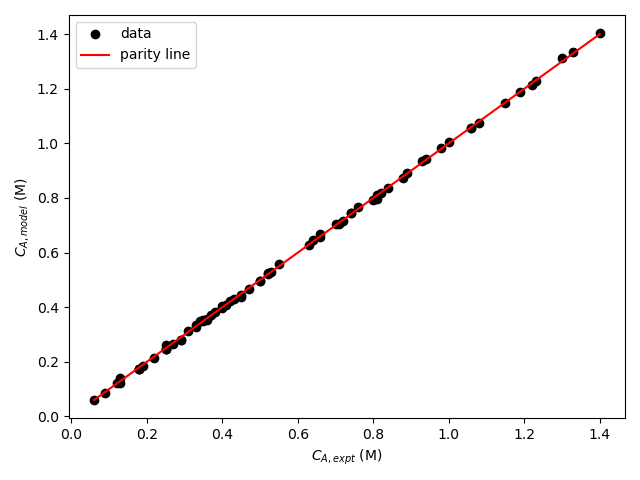
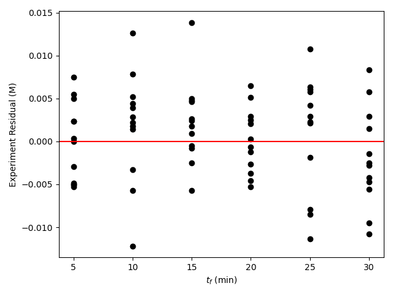
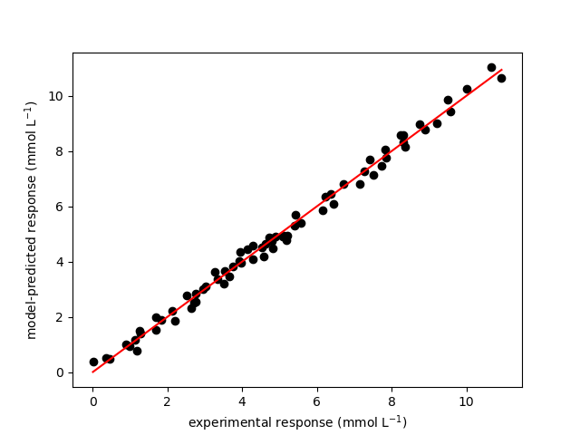
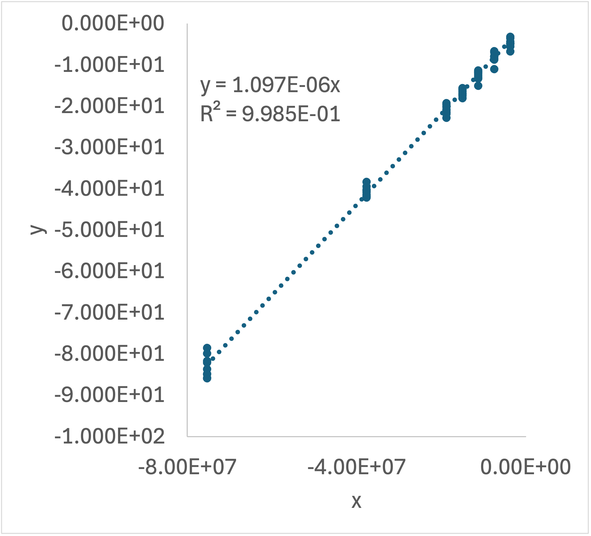

| Experiment | T (°C) | CA,0 (M) | tf (min) | CA,f (M) |
|---|---|---|---|---|
| 1 | 65 | 0.5 | 5 | 0.47 |
| 1 | 65 | 0.5 | 10 | 0.45 |
| 1 | 65 | 0.5 | 15 | 0.41 |
| 1 | 65 | 0.5 | 20 | 0.38 |
| 1 | 65 | 0.5 | 25 | 0.36 |
| 1 | 65 | 0.5 | 30 | 0.33 |
| 2 | 73 | 0.5 | 5 | 0.45 |
| 2 | 73 | 0.5 | 10 | 0.40 |
19 Analysis of Kinetics Data from a BSTR
Chapter 18 presented an overview of the design of kinetics experiments and the generation and analysis of kinetics data. This chapter focuses specifically on data generation and analysis using reactors that conform to the assumptions of the ideal BSTR model described in Chapter 6 and Appendix G. Only isothermal, single-response data are considered.
19.1 Laboratory BSTRs
The name Batch Stirred Tank Reactor may conjure up a mental image of a BSTR as a cylindrical vessel fabricated from steel, with some means of stirring the contents vigourously. In fact, it is quite possible to use a simple beaker or Erlenmeyer flask placed on a heated magnetic stir plate and equipped with magnetic stir bar as a BSTR. When a round-bottomed flask like that shown in Figure 19.1 is used, the stir bar can be replace by rotating shaft from a motor that extends through a neck and into the flask. The shaft has a paddle on its end that is curved to match the bottom of the flask. As the paddle rotates, it mixes the contents of the reactor. The reactor shown in the figure has two additional necks that can be used, for example, to insert a thermometer and to withdraw samples for analysis. This particular flask has a jacket that surrounds the reactor. A heating or cooling fluid can be circulated through that jacket using the inlet and outlet ports seen on the sides of the vessel. There is also a stopcock at the bottom that can be opened to drain the BSTR when the experiments are complete.

For higher pressure reactions, a metal “autoclave” can be used. The top of this type of autoclave is a flange with a gasket that can be bolted onto the reactor to seal it for use at higher pressures. Typically autoclaves can be heated or cooled, and they use a shaft and paddle for agitation. Special fittings or magnetic couplings are used so that the rotating shaft can pass into the autoclave without allowing the high pressure contents to leak out.
In fact, devices that do not resemble a stirred beaker can also be used as BSTRs for kinetics data generation. The primary requirement is that the contents of the reactor be perfectly mixed. As an example, Figure 19.2 shows a recirculation loop reactor. Fluid is rapidly recirculated in the reactor by a pump. In-line mixing devices can be placed in the flow path to promote thorough mixing of the fluid. The reactor must be operated at a very high recirculation rate, and for isothermal operation, the pump and other components all must be maintained at the same constant temperature. If heterogeneous catalytic reactions are being studied, a packed catalyst bed can be inserted somewhere within the loop. In this case, the amount of reactant converted during a single pass through the bed should be very small so that the compositions at the beginning and at the end of the bed are essentially equal. In this way the composition in the loop will change with time, but within it, the composition will be essentially uniform everywhere, just as the batch reactor model assumes. An isothermal recirculation reactor such as that shown in Figure 19.2 is particularly useful for the study of a single gas phase reaction that involves a change in the total number of moles. In such a system, if the initial composition, temperature and pressure are known, the composition at any other time can be found from a measurement of the total pressure. Thus kinetics data can be measured simply by recording the total pressure as a function of time.

The stopped flow reactor, shown schematically in Figure 19.3, is a batch reactor that is especially useful for the study of rapid, liquid-phase, bimolecular reactions. Solutions containing the reactants are fed in separate streams to a small mixing chamber. This chamber is designed so that the fluids enter as high velocity jets. The high velocity of these jets causes instantaneous, perfect mixing as the jets enter the reactor. Downstream from the mixing chamber, but still near to it, a detector is located. Typically the detector is a spectrophotometer. This device shines radiation of a given frequency through the fluid and measures how much of the radiation is absorbed. The frequency of the radiation is chosen so that only one of the reactants or products absorbs the radiation. In this way the response from the spectrophotometer is directly proportional to the amount of that one reactant or product. In a typical experiment the fluids begin flowing and a steady state is established. The flow is then stopped instantaneously, and the response of the spectrophotometer is recorded as a function of time. The instant the flow stops, the volume through which the radiation passes becomes a very small batch reactor.

19.1.1 Testing the Ideality of a BSTR
Before a laboratory BSTR is used to generate kinetics data, it should be tested to ensure that it conforms to the assumptions of an ideal BSTR. The most important assumption is that of perfect mixing. If the reactor walls are transparent or if there is a window in the walls, a “smoke test” is a simple way to check the mixing. To perform this kind of test a small amount of colored fluid is added to the reactor. For a gas phase reactor the added fluid is some form of smoke, for a liquid phase system it is often a colored dye. The contents of the reactor are observed at the instant the smoke or dye is added. The smoke or dye should instantaneously mix and fill the entire contents of the reactor. Importantly, there should not be any “corners” or other locations where the color changes slowly. Locations where the color changes slowly are called stagnant zones. They are places where the mixing is not perfect.
A second way of testing the assumption of perfect mixing involves performing the same experiment several times. Each time the experiment is repeated, the only difference from the other experiments is the rate of agitation. That is, a different stirrer speed or recirculation rate is used in each experiment. As the agitation rate is increased in successive experiments, a point should be reached where the experimental results are identical to the previous experiment. At that rate of agitation, the assumption of perfect mixing can be assumed to be satisfied. In subsequent experiments where kinetics data are being generated, an agitation rate somewhat above that critical rate should then be used.
19.2 BSTR Kinetics Experiments and Data
In a typical BSTR kinetics experiment, the reactants are first loaded into the reactor; this is also called charging the reactor. If the charge to the reactor has not been pre-heated, then once the reagents are in the vessel, it may be necessary to heat the contents to the desired temperature. If the reaction being studied involves two or more reactants, they can be pre-heated separately to the desired temperature before adding them to the reactor. If a catalytic or enzymatic reaction is being studied, the catalyst or enzyme can be added to start the reaction once the desired temperature has been reached.
In any of these situations, as soon as the reactor is charged and has stabilized at the desired temperature, the “initial composition” is analyzed. It is important to recognize that for kinetics data analysis purposes, the initial composition is not necessarily the composition that was charged to the reactor, but the composition at the point when the reactor begins to operate isothermally. The kinetics experiment is taken to begin at this instant, and the elapsed time is measured from that instant. Periodically the elapsed time and some quantity that can be related to the composition (the response) are recorded. Each such measurement represents a single data point. The experimental design dictates how long the reaction is allowed to continue, or equivalently, the number of data points generated before the reaction is terminated. As such, each experiment typically yields multiple data points.
19.3 Design of BSTR Experiments
The design of kinetics experiments was considered in Chapter 18 and won’t be repeated here. It was recommended that reactors being used to generate kinetics data should operate isothermally and that experiments should be performed in blocks where all of the experiments in any one block occur at the same temperature. In Reaction Engineering Basics it is always assumed that kinetics data have been generated using an isothermal reactor wherein only one reaction is occurring.
Briefly, the purpose of kinetics experiments is to generate kinetics data that can be used to develop a rate expression. Generally there will be a critical range of temperatures and critical ranges of the concentration of each reagent within which the rate expression needs to be as accurate as possible. The experiments should be designed so that the temperature and each concentration (or partial pressure) spans its critical range. A factorial design like that described in Chapter 18 and illustrated in Example 18.6.1 can be used.
19.3.1 Adjusted Experimental Inputs
As already noted, each BSTR experiment will be isothermal, so one of the experimental adjusted reactor inputs will be the reactor temperature. The number of temperature levels to be used will depend upon the critical range of the temperature. If the rate expression needs to be accurate over a range of 150 °C, a greater number of temperature levels should be studied than if it needs to be accurate over a range of 30 °C.
In many cases, the rate of liquid-phase reactions is not affected by total pressure. Nonetheless, the pressure in a liquid-phase system will not change as the reaction proceeds. So if desired, total pressure can be used as a factor for liquid-phase reactions, and different pressure levels can be specified in the experimental design.
For gas-phase reactions, the pressure is closely tied to the composition. If the reaction causes a change in the total number of moles in the system, the total pressure will change as the reaction proceeds. Since reactor volume and temperature are constant in a BSTR kinetics experiment, the initial composition for a gas phase system is determined by the total pressure and the relative amounts of the reagents at the time when isothermal operation commences.
Two experimental inputs affect the composition of the reacting fluid during the experiments. One is the initial composition described above, and the other is the time that has elapsed when the response is measured. In any one experiment, the composition will change continually as the reaction proceeds, so responses measured at different elapsed times during the same experiment will correspond to different compositions. It makes sense to measure the response as many times as possible during each experiment to minimize the time and cost of the experimental study.
The number of times the response can be measured may be determined by the time it takes to make the measurement. For example changes in the absorbance of monochromatic radiation can be measured almost continuously, but analysis using gas chromatography may require several minutes per measurement. The temperature of the experiment may also affect the possible number of response measurements. Consider an irreversible reaction. The reaction rate will be greater in experiments where the temperature is higher. As a consequence, the reaction will go to completion in a shorter period of time in higher temperature experiments than in low temperature experiments. That may mean that fewer responses can be measured in a high temperature experiment than in a low temperature experiment.
19.3.2 Experimental Responses
Many different quantities can be used as the experimental response. The only requirement is that it must be possible to relate the measured response to the composition of the system. Obvious choices for the measured response are the concentration or partial pressure of any one reactant or product. Recall from Chapter 3 that knowing the initial molar amounts and any one final amount allows calculation of the apparent extent of reaction, which, in turn allows the calculation of all other final amounts. That said, any quantity that can be used to calculate the apparent extent of reaction is an acceptable response.
One other possibility for the measured response from BSTR kinetics experiments is known as the half-life. This response variable is the elapsed time required for the amount of any one reactant to decrease to one-half of its initial value. Measuring the half-life is particularly easy with a stopped-flow reactor like that depicted in Figure 19.3. One simply measures the elapsed time between the instant the flow is stopped and the instant the spectrophotometer signal becomes one-half of its original value. (This assumes that the spectrophotometer signal is linearly proportional to the amount of the reagent absorbing the light.) The analysis of kinetics data where the half-life is the measured response is discussed below.
19.4 BSTR Data Analysis
Kinetics data analysis is discussed in general terms in Chapter 18. It requires generation of a model for the reactor used in the experiments. The reactor model, Chapter 7, is used within a predicted responses function to predict the response for each experiment. The prdicted responses function is called by a numerical fitting function which fits the predicted reponses model to the experimental data. In this chapter that process is applied to analysis of data from an isothermal BSTR. Chapter 18 also describes analysis of same-temperature blocks of kinetics data using linear least squares, and it mentions the use of approximate reactor models. The analysis of BSTR kinetics data using those approaches is also considered in this chapter.
The reactor that needs to be modeled is an isothermal BSTR wherein a single reaction is taking place. The reactor model is generated in the same way that BSTR reactor models are generated in Chapter 9. Since the reactor operates isothermally and only one reaction takes place, the mole balance design equations can be solved independently of the energy balances. Calculation of the composition at any time after the start of the reaction does not require use of the energy balances. Therefore only mole balances on the reagents are included among the design equations. In addition, since only one reaction is taking place, it isn’t necessary to index the reaction. As a consequence, the BSTR design equations for an isothermal, single-reaction experiment take the form shown in Equation 19.1.
\[ \frac{dn_i}{dt} = \nu_i r V \tag{19.1}\]
The instant the reactor stabilizes at the desired temperature can be defined as \(t=0\). The initial values then equal the molar amounts of each of the reagents at that instant. The response may be measured several times during a BSTR kinetics experiment, yielding several data points from each experiment. The initial values are the same for each of the data points, but the stopping criterion changes, being equal to the elapsed time at which the response was measured.
The derivatives function for a kinetics experiment receives the the elapsedd time and the molar amounts of each of the reagents at the start of an integration step and returns the corresponding values of the derivative of each molar amount with respect to time. To do so, it first needs to calculate unknown quantities appearing in the design equations, and then use the design equations to evaluate the derivatives. During kinetics data analysis, the rate expression parameters will be changing as the predicted responses function is being fit to the experimental. Consequently the current values of the rate expression parameters will need to be made available to the derivatives function.
When a set of kinetics data are being analyzed, the predicted responses function will need to solve the BSTR design equations for each experiment in the data set. For this reason, the adjusted experimental inputs for the experiment being analyzed are usually passed to the reactor model function as an argument during kinetics data analysis. They are needed for the calculation of the initial values and the stopping criterion.
The final component of the BSTR model is a description of the sequence of function calls and calculations used to solve the design equations. An IVODE solver is used to solve the BSTR design equations. It is passed the derivatives function, initial values, and the stopping criterion for the experiment being analyzed. It solves the design equations and returns sets of corresponding values of the time and the molar amounts of each of the reagents spanning the range from the \(t=0\) to the time when the response was measured in that experiment. These sets of values are then returned by the BSTR model.
The predicted responses fucntion that must be written is straightforward. It receives the set of adjusted inputs from all of the experiments and values for each of the parameters that appear in the proposed rate expression. It simply loops through the experiments. For each experiment it uses the BSTR model to solve the design equations and then calculates the predicted response using the results from solving the design quations. After all of the experiments have been evaluated, it returns the set of model-predicted responses for the experiments.
A numerical fitting function is used to fit the predicted responses model to the experimental data. The details of using the numerical fiting function will depend upon the specific software being used, but the arguments provided to it and the results it returns are essentially the same for any software package. The arguments that must be provided to a numerical fitting function consist of a guess for the unknown rate expression parameters, the values of each of the experimentally adjusted inputs for all of the experiments in the data set being analyzed, the corresponding values of the measured response for every experiment, and the predicted responses function described above.
Assuming the numerical fitting function is successful, it will return the estimated values of each parameter appearing in the rate expression, the upper and lower bounds of the 95% confidence interval for each parameter, and the coefficient of determination, \(R^2\). Instead of the 95% confidence intervals for the rate expression parameters, the fitting function might return the standard error. It also might return the set of predicted responses corresponging to the estimated parameter values. If the predicted responses are not returned by the fitting function, they can be calculated using the predicted responses function. A parity plot and residuals plots then can be generated, and the accuracy of the proposed rate expression can be assessed as described in Chapter 18.
19.4.1 BSTR Kinetics Data Analysis Using a Linearized Model
In some situations it is possible to analyze BSTR kinetics data using linear least squares instead of a numerical fitting function. To do so, the data set is split into same-temperature blocks of data, and each block is analyzed separately.
To begin, Equation 19.1 is written for any one reactant or product, it does not matter which. That mole balance is solved analytically to obtain an integrated form of the reactor model, as indicated in Equation 19.2 where \(f\) represents the function obtained upon solving the mole balance analytically. The mole balance may contain the molar amounts of reagents other than \(i\). If so, those molar amounts must be expressed in terms of \(n_i\) using the apparent extent of reaction before the IVODE can be solved. It isn’t always possible to solve the mole balance analytically. If that is the case, this approach cannot be used.
\[ \frac{dn_i}{dt} = \nu_i r V \qquad \Rightarrow \qquad n_i = f\left( n_i, t \right) \tag{19.2}\]
Assuming that the mole balance can be solved to find the function, \(f\), the resulting algebraic/transcendental equation (ATE) is re-written so that by defining new variables, \(y\) and \(x_1\) through \(x_n\), it becomes a linear equation as shown in Equation 19.3. The number of \(x_i\) variables depends upon the number of parameters in the proposed rate epxression. It isn’t always possible to linearize the integrated reactor model, in which case this approach again can’t be used.
\[ y = m_1x_1 + m_2x_2 + \cdots + m_nx_n + b \tag{19.3}\]
The rate expression parameters cannot appear in the defining equations for the new variables, \(y\) and the \(x_i\). Additionally, the definition of each slope, \(m_i\), and the intercept, \(b\), must contain a unique combination of the rate expression parameters; it may not contain any adjusted inputs or the response, and it cannot be a known constant. With those restrictions, the total number of slopes and intercepts will equal the number of rate expression parameters.
The values of \(y\) and the \(x_i\) are calculated for each experiment. A spreadsheet, calculator, or linear least-squares function is used to fit the Equation 19.3 to the resulting \(x-y\) data. Doing so yields the best value of each slope, \(m_i\), and the intercept, \(b\), along with the 95% confidence interval (or standard error) for each and the coefficient of determination, \(R^2\). During linearization of the reactor model, the slopes and intercept were defined in terms of the rate expression parameters. Those definitions are used to calculate the best estimates and the uncertainty for each rate expression parameter.
Very commonly when there is only one \(x\) (i. e. when \(y=mx\) or \(y = mx + b\)) this is all done in a spreadsheet. The adjusted inputs and the responses are entered as columns. New columns are created for \(y\) and \(x\) which are calculated using the original data. A plot of \(y\) vs. \(x\) is generated, a trendline is added, and the equation for the trendline is displayed on the graph. The rate expression parameters are then calculated using the slope and intercept in the displayed equation. Most spreadsheets can be configured to show or calculate the coefficient of determination and the uncertainty in the slope and intercept, can also be calculated.
Analyzing all of the same-temperature data blocks results in a secondary data set consisting of the value of each rate expression parameters at each of the data block temperatures. Assuming the unknown parameters are rate coefficients or equilibrium constants for which thermodynamic data are unavailable, the second stage of analysis then involves fitting the Arrhenius expression to this secondary data set. This has already been described in Chapter 4 and Appendix L and illustrated in Example 4.5.4, so it won’t be discussed here.
This approach to kinetics data analysis has great historical significance and is still very commonly used and taught. It is not emphasized in Reaction Engineering Basics because it cannot always be used, and when it is used, the pre-exponential factors, activation energies, and unknown heats of reaction appearing in the proposed rate expressions are estimated using other estimates and not using the experimental data directly.
19.4.2 Parameter Estimation Using an Approximate Reactor Model
This approach is often referred to as differential data analysis. It, too, uses a single mole balance to model the BSTR. Instead of solving the exact mole balance, Equation 19.1, the approximate form shown in Equation 19.4 is used. The primary advantage of this approach is that it converts the reactor model from an IVODE to an ATE. The derivative can be approximated using backward, forward or central differences (see Appendix A). In the past, before computers were readily available, the derivative was also estimated graphically. That is \(n_i\) was plotted vs. \(t\), a smooth curve was drawn through the data, and the slopes of tangents to that curve were measured and used to approximate the derivative.
\[ \frac{dn_i}{dt} = \nu_i r V \approx \frac{\Delta n_i}{\Delta t} = \nu_i r V \tag{19.4}\]
To complete the analysis, Equation 19.4 is usually re-written so that by defining new variables it becomes a linear equation at which point the remaining analysis is exactly the same as just described. Of course, if Equation 19.4 cannot be linearized, this approach cannot be used.
As one might expect, this approach is not as accurate as using the exact reactor model. As the data become noisier (i. e. the greater the random error in the data), the accuracy decreases. If the noise in the data is very small and the intervals between response measurements are also small, the accuracy can approach the accuracy of analysis using the exact reactor model. Nonetheless, analysis using the exact reactor model is generally preferred, and differential data analysis more often is used to perform a quick, preliminary analysis.
One variation on this approach uses initial rates. The only difference in the initial rate approach is that Equation 19.4 is only applied at the start of the experiment. As a result, each experiment yields only the value of the derivative at the initial conditions. This approach is typically applied graphically by plotting the molar amount of \(i\) vs. \(t\). The initial slope then can be measured graphically. It facilitates a quick, preliminary assessment of possible rate expressions. As personal computers have become popular and available, the use of this approach appears to have declined.
19.4.3 Half-life Methods of Analysis
Another method that appears to have declined in popularity is the half-life method. It involves measuring the “half-life” of the reaction as described earlier. The half-life, \(t_{1/2}\), is the amount of time that it takes for the concentration of a reactant to decrease to one-half of its initial value. The half-life method is most commonly applied when the rate is expected to depend upon the concentration of a single reactant, e. g. reactant A, in a power-law fashion, Equation 19.5. This rate expression can be substituted into the batch reactor design equation, Equation 19.1, as shown in Equation 19.6.
\[ r_A = - kC_A^\alpha \tag{19.5}\]
\[ \frac{dn_i}{dt} = - kVC_A^\alpha = -kV\left( \frac{n_A}{V} \right)^\alpha = -kV^{1-\alpha}n_A^\alpha \tag{19.6}\]
Equation 19.6 can be solved by separating the variables and integrating. The lower limit of integration is that the moles of A equal \(n_{A,0}\) at \(t\) equals zero, and the upper limit of integration is that the moles of A equal \(0.5n_{A,0}\) at \(t\) equals \(t_{1/2}\). If the reaction order, \(\alpha\), is equal to one, the result is given in Equation 19.7; for reaction orders other than one, Equation 19.8 results.
\[ t_{1/2} = \frac{0.693}{k} \tag{19.7}\]
\[ t_{1/2} = \frac{\left(2^{\alpha -1} - 1\right)}{kC_{A,0}^{\alpha - 1}\left( \alpha - 1 \right)} \tag{19.8}\]
Equation 19.7 and Equation 19.8 suggest that the reaction order, \(\alpha\), can be determined by measuring the half-life in a series of experiments using different initial concentrations of A. If the half-life is the same for all initial concentrations, the reaction is first order and the rate coefficient is 0.693 divided by the half-life. Otherwise, a log-log plot of the half-life vs. the initial concentration should yield a straight line, and the slope should equal \(1-\alpha\) as can be seen by taking the logs of each side of equation Equation 19.8. Note that \(k\) and \(\alpha\) were treated as constants in this analysis, so each block of experiments at a single temperature must be evaluated separately.
19.5 Examples
This chapter presents examples of kinetics data analysis using data generated in an isothermal BSTR. Chapters 20, and 21 illustrate kinetics data analysis using data generated in ideal CSTRs and PFR, respectively. Analysis using the full data set is preferred, and doing so is described in the first four examples that follow. Example 19.5.5 illustrates using a spreadsheet for kinetics data analysis involving same-temperature data blocks, a linearized reactor model, and linear least squares parameter estimation. Example 19.5.6 illustrates differential data analysis using same-temperature data blocks, an approximate reactor model, and a spreadsheet.
19.5.1 Assessing a First-Order Rate Expression for a Liquid-Phase Reaction
Kinetics data for liquid-phase reaction (1) were generated using an ideal, isothermal, 1 L BSTR. The reaction is irreversible, and preliminary analysis indicated that the rate is not affected by the concentration of the product, Z. The experimental design used the initial concentration of A and the temperature as factors. Twelve experiments were performed wherein the temperature and initial concentration of reagent A were set after which the concentration of reagent A was measured at six reaction times, giving a set of 72 experimental data points. The rate expression shown in equation (2) has been proposed for this reaction. The rate coefficient in equation (2) is expected to display Arrhenius temperature dependence. Determine the best values for the Arrhenius pre-exponential factor and activation energy and assess the accuracy of the proposed first order rate expression.
\[ A \rightarrow Z \tag{1} \]
\[ r = k C_A \tag{2} \]
Note that these data were generated using the experimental design from Example 18.6.1. The first few data points are shown in Table 19.1. The full data set is available in the .csv file reb_19_5_1_data.csv
Click Here to See What an Expert Might be Thinking at this Point
This assignment presents kinetics data, describes the experiments used to generate them, and asks me to assess the accuracy of a proposed rate expression. These are characteristics of is a kinetics data analysis assigment, in this case one involving data from an isothermal BSTR. I’ll begin by summarizing the assignment. I’ll assign an appropriate variable symbol to each quantity provided in the narrative. I’ll use a subscripted “0” to denote quantities at the start of the reaction, a subscripted “f” to denote quantities at the time the response was measured, a subscripted “CI,l” to denote the lower limit of a 95% confidence interval, and a subscripted “CI,u” to denote the upper limit of a 95% confidence interval. I’ll underline symbols that represent a set of values.
The adjusted experimental inputs were the temperature, initial concentration of A and the elapsed time at which the response was measured. The measured response was the concentration of A.
The assignment asks for the best estimates for the Arrhenius pre-exponential factor and activation energy. It also asks for an assessemnt of the accuracy of the rate expression. That makes the coefficient of determination, the uncertainties in the estimated parameters, a parity plot, and residuals plots quantities of interest, as well, since I’ll need them to assess the accuracy of the rate expression.
19.5.1.1 Assignment Summary
Reactor System: Isothermal, liquid-phase BSTR
Reactor Schematic:
Quantities of Interest: \(k_0\), \(k_{0,CI,l}\), \(k_{0,CI,u}\), \(E\), \(E_{CI,l}\), \(E_{CI,u}\), \(R^2\), \(\underline{C}_{A,f,expt}\) vs. \(\underline{C}_{A,f,model}\) (as a parity plot), and \(\underline{\epsilon}_{expt}\) vs. \(\underline{T}\), vs. \(\underline{C}_{A,0}\), and vs. \(\underline{t}_{f}\) (as residuals plots).
Given and Known Constants: \(V = 1\text{ L}\), \(R\) = 8.314 x 10-3 kJ mol-1 K-1.
Adjusted Experimental Inputs: \(\underline{T}\), \(\underline{C}_{A,0}\), and \(\underline{t}_{f}\)
Experimental Response: \(\underline{C}_{A,f}\)
19.5.1.2 Mathematical Formulation of the Calculations
Click Here to See What an Expert Might be Thinking at this Point
I know I’ll need a reactor model, so I’ll generate that first. In kinetics experiments the reactor operates isothermally, so the mole balance design equations can be solved independently of the energy balances. The composition at the time the response is measured can be calculate by solving the mole balances, so an energy balance on the reacting fuid and an energy balance on a heat exchange fluid do not need to be included among the reactor design equations. Only one reaction is takeing place, so the general form of the mole balance takes the form given in Equation 19.1. It can be used to write a mole balances for A and Z.
\[ \frac{dn_i}{dt} = \nu_i r V \]
The BSTR reactor design equations are IVODEs, so the model must include initial values, a stopping criterion and a derivatives function (see Appendix J). I can define \(t=0\) to be the instant the experiment started. The initial values then equal the molar amounts of A and Z at that time. Reagent Z was not present at the start of any of the experiments being analyzed here, so its initial value is zero. For each experiment I know the elapsed time at which the response was measured. I want to calculate the response at that time, so I will use \(t_f\) as the stopping criterion.
Design Equations
\[ \frac{dn_A}{dt} = -rV \tag{3} \]
\[ \frac{dn_Z}{dt} = rV \tag{4} \]
Initial Values and Stopping Criterion
| Variable | Initial Value | Final Value |
|---|---|---|
| \(t\) | \(0\) | \(t_f\) |
| \(n_A\) | \(n_{A,0}\) | |
| \(n_Z\) | \(0\) |
Click Here to See What an Expert Might be Thinking at this Point
I’ll need to write the derivatives function, and it must receive the values of the independent and dependent variables at the start of an integrations step as its only arguments. It must return the corresponding values of the derivatives of \(n_A\) and \(n_Z\) with respect to \(t\).
Within the derivatives function the given and known constants and the arguments are available. Before the derivatives can be evaluated, any other quantities appearing in them must be calculated. The only other quantity in the design equations here is the rate, which can be calculated using equation (2), but to do that, the concentration of A and the rate coefficient need to be calculated.
The concentration of A can be calculated using the defining equation for concentration. The Arrhenius expression, Equation 4.8, can be used to calculate the rate coefficient, but to do so the Arrhenius pre-exponential factor, activation energy, and the temperature are needed. As the predicted responses model is fit to the experimental data, the pre-exponential factor and activation energy will be changing. The temperature will be different depending upon which experimental data point is being analyzed. Thus, the pre-exponential factor, activation energy and temperature are not known and cannot be calculated, so they must be made available to the derivatives function.
Derivatives Function
\(\qquad\) Arguments: \(t\), \(n_A\), and \(n_Z\).
\(\qquad\) Must be Available: \(k_0\), \(E\), and \(T\).
\(\qquad\) Return values: \(\frac{dn_A}{dt}\), and \(\frac{dn_Z}{dt}\).
\(\qquad\) Algorithm:
\[ k = k_0\exp{\left( \frac{-E}{RT}\right)} \tag{5} \]
\[ C_A = \frac{n_A}{V} \tag{6} \]
\[ r = kC_A \tag{2} \]
\[ \frac{dn_A}{dt} = -rV \tag{3} \]
\[ \frac{dn_Z}{dt} = rV \tag{4} \]
Click Here to See What an Expert Might be Thinking at this Point
The last component of the BSTR model is a function that solves the design equations. I’ll use an IVODE solver to do that, and I’ll need to provide it with the initial values, stopping criterion, and the derivatives function, above. The initial molar amount of A can be calculated from its initial concentration, but that will be varying from one experiment to the next. Also, the time at which the response was measured will vary from one experiment to the next. Therefore, the initial concentration of A and the time at which the response was measured for the experiment being analyzed must be provided to the reactor model as input.
BSTR Reactor Function
\(\qquad\) Arguments: \(T\), \(C_{A,0}\) and \(t_f\).
\(\qquad\) Return Values: \(\underline{t}\), \(\underline{n}_A\), and \(\underline{n}_B\)
\(\qquad\) Algorithm:
Make \(T\) globally available.
Calculate unknown initial and final values.
\[ n_{A,0} = C_{A,0}V \tag{7} \]
Call an IVODE solver passing the initial values, stopping criterion and derivatives function as arguments.
Receive corresponding sets of values of \(t\), \(n_A\), and \(n_B\) that span the range from \(t=0\) to \(t=t_f\) from the IVODE solver and return them.
Click Here to See What an Expert Might be Thinking at this Point
The reactor model cannot be fit to the experimental data. Instead it must be used to create a predicted response model that relates the adjusted experimental inputs for an experiment to the predicted response for that experiment.
To do that, the BSTR model above can be solved for any one experiment. Doing so will yield \(\underline{t}\), \(\underline{n}_A\), and \(\underline{n}_Z\). The predicted response, the final concentration of A, can then be calculated using the defining equation for concentration.
I’ll use a numerical fitting function to estimate the parameters in the rate expression. One of the things I’ll need to provide to it is a predicted responses function that calculates the predicted response for each experiment as just described, and then returns the results. I must write the predicted responses function, and doing so is fairly straightforward.
The predicted responses function must receive the adjusted experimental inputs for all of the experiments and values for each of the parameters appearing in the proposed rate expression as its only arguments. It must return the predicted responses for all of the experiments. All it needs to do is go through the experiments one by one and calculate the predicted response as just described. There are two important things to remember when doing this. One is to immediately make the rate expression parameters available to the derivatives function. The second is to make the temperature available to the derivatives function before solving the reactor design equations.
Arguments: \(\underline{T}\), \(\underline{C}_{A,0}\), \(\underline{t}_{f}\), \(k_0\), and \(E\).
Return values: \(\underline{C}_{A,f,model}\)
Algorithm:
- Make \(k_0\) and \(E\) available to the derivatives function.
- For each experiment in the data set
- Call the BSTR model function, passing \(C_{A,0}\) and \(t_f\) as arguments, to solve the BSTR design equations and receive \(\underline{t}\), \(\underline{n}_A\), and \(\underline{n}_Z\).
- Calculate the predicted response.
\[ C_{A,f,model} = \frac{\underline{n}_A\big\vert_{t=t_f}}{V} \tag{8} \]
- Return the set of model-predicted responses, \(\underline{C}_{A,f,model}\).
Click Here to See What an Expert Might be Thinking at this Point
Now that I have a predicted responses function, I can use a numerical fitting function from a software package to fit the predicted response model to the experimental data. I will need to provide four things to it:
- an initial guess for each of the rate expression parameters
- the adjusted experimental inputs for all of the experiments
- the experimental responses for all of the experiments
- the predicted responses function
Assuming the numerical fitting function is successful, it will return the estimated value of \(k_0\), the lower and upper limits of its 95% confidence interval, \(k_{0,CI,l}\) and \(k_{0,CI,u}\), the estimated value of \(E\), the lower and upper limits of its 95% confidence interval, \(E_{CI,l}\) and \(E_{CI,u}\), and the coefficient of determination, \(R^2\).
I’m asked to assess the accuracy of the resulting model. To help with that, I can generate a parity plot and residuals plots. To do so I will use the estimated values of \(k_0\) and \(E\) to calculate the model-predicted responses for all of the experiments. Plotting the predicted responses against the corresponding experimental responses will result in the partiy plot. I can calculate experiment residuals, \(\epsilon_{expt}\), by taking the difference between the experiment responses and the model-predicted responses. Plotting the experimental residuals against the corresponding values of each or the experimental adjusted inputs will yield a set of residuals plots.
- Set an initial guess for the parameters (\(k_{0,guess}\) and \(E_{guess}\))
- Call a numerical fitting function passing the adjusted experimental inputs for all of the experiments (\(\underline{T}\), \(\underline{C}_{A,0}\), and \(\underline{t}_{f}\)), the experimental responses (\(\underline{C}_{A,f}\)), the initial guess for the parameters from step 1, and the predicted responses function, above, as arguments, and receive the parameter estimates (\(k_0\) and \(E\)), their 95% confidence intervals (\(k_{0,CI,l}\), \(k_{0,CI,u}\), \(E_{CI,l}\), and \(E_{CI,u}\)), and the coefficient of determination, \(R^2\).
- Call the predicted responses function above, passing the estimated parameters (\(k_0\) and \(E\)) and the adjusted experimental inputs for all of the experiments (\(\underline{T}\), \(\underline{C}_{A,0}\), and \(\underline{t}_{f}\)) as arguments and receive the predicted responses for all of the experiments (\(\underline{C}_{A,f,model}\)).
- Calculate the experiment residuals.
\[ \underline{\epsilon}_{expt} = \underline{C}_{A,f} - \underline{C}_{A,f,model} \tag{9} \]
- Generate a parity plot showing \(\underline{C}_{A,f,expt}\) vs. \(\underline{C}_{A,f,model}\).
- Generate residuals plots showing \(\underline{\epsilon}_{expt}\) versus vs. \(\underline{T}\), vs. \(\underline{C}_{A,0}\), and vs. \(\underline{t}_{f}\).
Click Here to See What an Expert Might be Thinking at this Point
At this point, I have everything I need to calculate the quantities of interest. I’ll need to read in the data, perform the calculations and present the results.
- Read the adjusted experimental inputs and experimental responses data from the file, reb_19_5_1_data.csv.
- Estimate the parameters and generate the assessment graphs as described above.
- Display the results and/or save them to a file.
19.5.1.3 Results and Discussion
The calculations were performed as described above with one significant exception. Because \(k_0\) can have a wide range of values, it is difficult to make a good initial guess for its value, and if the guess is not sufficiently close to the actual value, the fitting function can fail. Therefore, the the base-10 log of \(k_0\) was estimated, as described in Example 18.6.2. As a consequence the predicted responses function received the value of the base-10 log of \(k_0\) as an argument, from which \(k_0\) was calculated and made available to all other functions. In addition, the numerical fittng function returned the estimated values of the base-10 log of \(k_0\), the base-10 log of \(k_{0,CI,l}\), and the base-10 log of \(k_{0,CI,u}\). These were then used to calculate \(k_0\), \(k_{0,CI,l}\), and \(k_{0,CI,u}\). The results are as follow:
k0: 3.61 x 108 min-1, 95% CI [3.02 x 108, 4.33 x 108]
E: 67.5 kJ mol-1, 95% CI [67, 68.1]
R2: 1
The resulting parity plot and residuals plots are presented in Figure 19.5 and Figure 19.6.


The proposed rate expression offers a very accurate representation of the experimental data and can be accepted for use in the range of temperature and composition studied. The coefficient of determination is essentially equal to 1.0, the upper and lower limits of the confidence intervals for both parameters are close to their estimated values, the data in the parity plot fall very close to the parity line, and the experiment residuals scatter randomly about zero in all three residuals plots.
19.5.2 Assessing a Second-Order Rate Expression for a Gas-Phase Reaction
The gas-phase reaction between reagents A and B was studied in an ideal, isothermal, 500 cm3 BSTR. In all experiments the reactor was charged with reagents A and B only, but with varying partial pressures. The fractional conversion of reagent A was measured at seven different elapsed times in each experiment. Experiments were performed at three different temperatures. A total of 189 data points were recorded. Assess the accuracy of the rate expression shown in equation (2).
\[ A + B \rightarrow Y + Z \tag{1} \]
\[ r = k P_A P_B \tag{2} \]
The first few data points are shown in Table 19.3. The full data set is available in the file reb_19_5_2_data.csv.
| T (°C) | PA,0 (atm) | PB,0 (atm) | tf (min) | fA |
|---|---|---|---|---|
| 475 | 0.5 | 0.5 | 0.5 | 0.022 |
| 475 | 0.5 | 0.5 | 1.0 | 0.031 |
| 475 | 0.5 | 0.5 | 1.5 | 0.049 |
| 475 | 0.5 | 0.5 | 2.0 | 0.060 |
| 475 | 0.5 | 0.5 | 2.5 | 0.078 |
Click Here to See What an Expert Might be Thinking at this Point
I can see that this is a kinetics data analysis problem involving an isothermal BSTR because it provides experimental data, describes the experiments that generated the data, and asks me to assess a proposed rate expression. I’ll begin by summarizing the assignment. I’ll assign appropriate variables symbols to each quantity that is provided. I’ll use a subscripted “0” to denote quantities at the start of the experiment, a subscripted “f” to denote quantities at the time the response was measured, and I’ll underline variables representing a set of values of that quantity.
From the problem narrative I know that the temperature, initial pressures of A and B, and the final time are the adjusted experimental inputs in the experioment. The response is the conversion of A.
The assignment asks for an assessment of the accuracy of the proposed rate expression. To do that I’ll estimate the pre-exponential factor, its 95% confidence interval, the activation energy, and its 95% confidence interval. I’ll also calculate the coefficient of determination, so I’ll list all of these as quantities of interest, using a subscripted “CI,l” and “CI,u” to denote the uppser and lower limits of the confidence intervals. I’ll also make a parity plot and residuals plots, so I will additionally list the quantities needed for those graphs as being of interest.
19.5.2.1 Assignment Summary
Reactor System: Isothermal, gas-phase BSTR
Reactor Schematic:
Quantities of Interest: \(k_0\), \(k_{0,CI,l}\), \(k_{0,CI,u}\), \(E\), \(E_{CI,l}\), \(E_{CI,u}\), \(R^2\), \(\underline{f}_A\) vs. \(\underline{f}_{A,model}\) (as a parity plot), and \(\underline{\epsilon}_{expt}\) vs. \(\underline{T}\), vs. \(\underline{P}_{A,0}\), vs. \(\underline{P}_{B,0}\), and vs. \(\underline{t}_f\) (as residuals plots).
Given and Known Constants: \(V = 500\text{ cm}^3\).
Adjusted Experimental Inputs: \(\underline{T}\), \(\underline{P}_{A,0}\), \(\underline{P}_{B,0}\), and \(\underline{t}_f\).
Experimental Response: \(\underline{f}_A\).
19.5.2.2 Mathematical Formulation of the Calculations
Click Here to See What an Expert Might be Thinking at this Point
I know that I’m going to need a model for the isothermal BSTR used in the experiments, so I’ll develop that first. I only need the mole balance design equations because they can be solved independently of the energy balances when the reactor is isothermal, and solving them will give me everything I need to calculate the predicted conversion.
I’ll write a mole balance on each of the reagents. The general form of the BSTR mole balance is given in Equation 6.8. Since there is only one reaction, the summation reduces to a single term and I don’t need subscripts denoting the reaction.
\[ \frac{dn_i}{dt} = V \sum_j \nu_{i,j}r_j \qquad \Rightarrow \qquad \frac{dn_i}{dt} = \nu_i r V \]
The design equations are IVODEs that I’ll solve numerically, so the reactor model must also include initial values, a stopping criterion, and a derivatives function. I can define the instant that the experiment starts to be \(t=0\). In that case the initial values are simply the molar amounts of each reagent at the start of the experiment. Here, the initial molar amounts of Y and Z were always equal to zero. I know the time when the response was measured, and I want to calculate the conversion at that time, so I’ll use it as the stopping criterion.
Design Equations
\[ \frac{dn_A}{dt} = -Vr \tag{3} \]
\[ \frac{dn_B}{dt} = -Vr \tag{4} \]
\[ \frac{dn_Y}{dt} = Vr \tag{5} \]
\[ \frac{dn_Z}{dt} = Vr \tag{6} \]
Initial Values and Stopping Criterion
| Variable | Initial Value | Final Value |
|---|---|---|
| \(t\) | \(0\) | \(t_f\) |
| \(n_A\) | \(n_{A,0}\) | |
| \(n_B\) | \(n_{B,0}\) | |
| \(n_Y\) | \(0\) | |
| \(n_Z\) | \(0\) |
Click Here to See What an Expert Might be Thinking at this Point
I will need to write the derivatives function. It must receive the values of the independent and dependent variables (\(t\), \(n_A\), \(n_B\), \(n_Y\), and \(n_Z\)) at the start of an integration step as its only arguments, and it must return the values of the derivatives of the dependent variables with respect to the independent variable (\(\frac{dn_A}{dt}\), \(\frac{dn_B}{dt}\), \(\frac{dn_Y}{dt}\), and \(\frac{dn_Z}{dt}\)).
Within the derivatives function the given and known constants and the arguments will be available. Any other quantities appearing in the design equations must be calculated before the derivatives can be evaluated using equations (3) through (6). The only unknown quantity in the design equations is \(r\), and it can be calculated using equation (2).
To calculate the rate using equation (2), the pre-exponential factor, activation energy, temperature, and partial pressures of A and B are needed. The partial pressures can be calculated using the ideal gas law, but that also requires the temperature.
As the predicted responses model is fit to the experimental data, the pre-exponential factor and the activation energy will be changing, and as different experiments are analyzed, the temperature will be changing. Therefore the kinetics parameters and the temperature cannot be calculated, and will need to be made available to the derivatives function.
Derivatives Function
\(\qquad\) Arguments: \(t\), \(n_A\), \(n_B\), \(n_Y\), and \(n_Z\).
\(\qquad\) Must be Available: \(k_0\), \(E\), and \(T\).
\(\qquad\) Return values: \(\frac{dn_A}{dt}\), \(\frac{dn_B}{dt}\), \(\frac{dn_Y}{dt}\), and \(\frac{dn_Z}{dt}\).
\(\qquad\) Algorithm:
\[ k = k_0 \exp{ \left( \frac{-E}{RT} \right)} \tag{7} \]
\[ P_A = \frac{n_A RT}{V} \tag{8} \]
\[ P_B = \frac{n_B RT}{V} \tag{9} \]
\[ r = kP_AP_B \tag{2} \]
\[ \frac{dn_A}{dt} = -Vr \tag{3} \]
\[ \frac{dn_B}{dt} = -Vr \tag{4} \]
\[ \frac{dn_Y}{dt} = Vr \tag{5} \]
\[ \frac{dn_Z}{dt} = Vr \tag{6} \]
Click Here to See What an Expert Might be Thinking at this Point
The last think I need for the reactor model is a function that will solve the design equations. I’ll use an IVODE solver for that. I’ll need to provide the initial values and stopping criterion in Table 19.4 to it along with the the derivatives function above. I can calculate the initial molar amounts of A and B for any experiment using their initial partial pressures, but since the partial pressures change from one experiment to the next, the initial partial pressures for the experiment being analyzed will need to be provided, and since their calculation requires the temperature, it, too must be provided. Similarly, the stopping criterion, that is the time at which the response was measured, also changes from experiment to experiment and will need to be provided as input to the reactor model.
BSTR Model Function
\(\qquad\) Arguments: \(T\), \(P_{A,0}\), \(P_{B,0}\), and \(t_f\).
\(\qquad\) Return Values: \(\underline{t}\), \(\underline{n}_A\), \(\underline{n}_B\), \(\underline{n}_Y\), and \(\underline{n}_Z\).
\(\qquad\) Algorithm:
- Calculate the unknown initial values.
\[ n_{A,0} = \frac{P_{A,0}V}{RT} \tag{10} \]
\[ n_{B,0} = \frac{P_{B,0}V}{RT} \tag{11} \]
Call an IVODE solver passing the initial values, stopping criterion and derivatives function as arguments.
Receive corresponding sets of values of \(t\), \(n_A\), \(n_B\), \(n_Y\), and \(n_Z\) that span the range from \(t=0\) to \(t=t_f\) from the IVODE solver and return them.
Click Here to See What an Expert Might be Thinking at this Point
I need to use the BSTR model above to create a predicted responses model that can be fit to the experimental data. To do that the BSTR model can be solved for any one experiment to get \(\underline{t}\), \(\underline{n}_A\), \(\underline{n}_B\), \(\underline{n}_Y\), and \(\underline{n}_Z\). The final molar amount of A can then be used calculate the conversion.
I will use numerical fitting func to estimate the unknown parameters, \(k_0\), and \(E\). I will need to provide it with a guess for \(k_0\), and \(E\), the set of adjusted experimental inputs being analyzed, the corresponding set of experimental responses and a predicted responses function that I will need to write.
The predicted responses function must receive the rate expression parameters (\(k_0\), and \(E\)) and adjusted experimental inputs for all of the experiments (\(\underline{T}\), \(\underline{P}_{A,0}\), \(\underline{P}_{B,0}\), and \(\underline{t}_f\)) as its only arguments. It must calculate and return the model-predicted responses for all of the experiments (\(\underline{f}_{A,model}\)). The predicted responses function simply needs to go through the experiments one by one and calculate the predicted conversion of A as just described. Before it starts going through the experiments it needs to make the rate expression parameters available to the derivatives function, and each time it starts to analyze an experiment it needs to make the temperature available to the derivatives function.
Arguments: \(\underline{T}\), \(\underline{P}_{A,0}\), \(\underline{P}_{B,0}\), \(\underline{t}_f\), \(k_0\), and \(E\).
Return values: \(\underline{f}_{A,model}\)
Algorithm:
- Make \(k_0\) and \(E\) available to the derivatives function.
- For each experiment in the data set
- Make the temperature available to the derivatives function.
- Call the BSTR model function passing \(T\), \(P_{A,0}\), \(P_{B,0}\), and \(t_f\) as arguments to solve the design equations and receive \(\underline{t}\), \(\underline{n}_A\), \(\underline{n}_B\), \(\underline{n}_Y\), and \(\underline{n}_Z\).
- Calculate the predicted response.
\[ n_{A,0} = \frac{P_{A,0}V}{RT} \tag{10} \]
\[ f_{A,model} = \frac{n_{A,0} - n_A\big\vert_{t=t_f}}{n_{A,0}} \tag{12} \]
- Return the set of model-predicted responses, \(\underline{f}_{A,model}\).
Click Here to See What an Expert Might be Thinking at this Point
I can use a numerical fitting function to fit the predicted response model to the experimental data. I will need to provide it with a guess for the rate expression parameters, the adjusted experimental inputs for all of the experiments, the experimental responses for all of the experiments, and the predicted responses function.
Assuming it is successful, the numerical fitting function will return the estimated values of \(k_0\), and \(E\), the lower and upper limits of their 95% confidence interval, \(k_{0,CI,ll}\) \(k_{0,CI,ul}\), \(E_{CI,ll}\), and \(E_{CI,ul}\) and the coefficient of determination, \(R^2\).
After estimating \(k_0\), and \(E\), I can calculate the model-predicted responses and use them to generate a parity plot of the experimental conversion vs. the model-predicted conversion. I can also calculate the differences between the experimental and model-predicted conversions, that is the experiment residuals, and use them to generate residuals plots of the residuals versus each of the adjusted experimental inputs.
- Set an initial guess for the parameters (\(k_{0,guess}\), and \(E_{guess}\))
- Call a numerical fitting function passing the adjusted experimental inputs for all of the experiments (\(\underline{T}\), \(\underline{P}_{A,0}\), \(\underline{P}_{B,0}\), and \(\underline{t}_f\)), the experimental responses (\(\underline{f}_A\)), the initial guess for the parameters from step 1, and the predicted responses function, above, as arguments, and receive the parameter estimates (\(k_0\), and \(E\)), their 95% confidence intervals (\(k_{0,CI,l}\), \(k_{0,CI,u}\), \(E_{CI,l}\), and \(E_{CI,u}\)), and the coefficient of determination, \(R^2\).
- Call the predicted responses function above, passing the estimated parameters (\(k_0\), and \(E\)) and the adjusted experimental inputs for all of the experiments (\(\underline{T}\), \(\underline{P}_{A,0}\), \(\underline{P}_{B,0}\), and \(\underline{t}_f\)) as arguments and receive the predicted responses for all of the experiments (\(\underline{f}_{A,model}\)).
- Calculate the experiment residuals.
\[ \underline{\epsilon}_{expt} = \underline{f}_A - \underline{f}_{A,model} \tag{13} \]
- Generate a parity plot showing \(\underline{f}_A\) vs. \(\underline{f}_{A,model}\).
- Generate residuals plots showing \(\underline{\epsilon}_{expt}\) vs. \(\underline{T}\), vs. \(\underline{P}_{A,0}\), vs. \(\underline{P}_{B,0}\), and vs. \(\underline{t}_f\).
Click Here to See What an Expert Might be Thinking at this Point
At this point, I have everything I need to calculate the quantities of interest. I’ll need to read in the data, perform the calculations and report the results.
- Read the adjusted experimental inputs and experimental responses data from the file, reb_19_5_2_data.csv.
- Estimate the parameters and generate the assessment graphs as described above.
- Display the results and/or save them to a file.
19.5.2.3 Results and Discussion
The calculations were performed as described above, and the results are as follow.
k0: 2.59 mol cm-3 min-1 atm-2, 95% CI [2.08, 3.1]
E: 21.8 kcal mol-1, 95% CI [21.5, 22.1]
R2: 0.999
Figure 19.8 and Figure 19.9 show the partiy and residuals plots, respectively.
Assessment
Click Here to See What an Expert Might be Thinking at this Point
I now need to assess the accuracy of the model and make a decision whether to accept it, recommend additional experiments, or reject it. Here, all of the accuracy criteria are satisfied.
- The coefficient of determination is close to 1.0.
- The upper and lower limits of the 95% confidence intervals for \(k_0\) and \(E\) are close to the estimated values.
- The data points in the parity plot all lie close to the parity line.
- The data points in the residuals plots scatter randomly about zero, and no apparent trend can be seen in the deviations.
These results indicate that the model is accurate and should be accepted.
The rate expression in equation (2) is accurate when the Arrhenius expression is used to represent the temperature dependence of \(k\). Equation (2) should be accepted as the rate expression with 2.59 mol cm-3 min-1 atm-2 as the pre-exponential factor and 21.8 kcal mol-1 as the activation energy.
19.5.3 Assessing a Gas-Phase Rate Expression Using Total Pressure as the Response
An ideal, 100 cm3, isothermal BSTR was used to generate kinetics data for reaction (1) at several temperatures. In a typical experiment at any one temperature, reagent A was added to the reactor at that temperature and a pressure of \(P_{A,0}\). Then, to begin the reaction, a sufficient amount of reagent B at the same temperature was added instantaneously to bring the total pressure to 6.0 atm. The reaction progress was followed by recording the total pressure once per minute for 24 min after the addition of reagent B. Use the resulting experimental data to assess the accuracy of the rate expression shown in equation (2).
\[ A + B \rightarrow Z \tag{1} \]
\[ r = k P_A \sqrt{P_B} \tag{2} \]
The first few data points are shown in Table 19.5. The full data set is available in the file reb_19_5_3_data.csv.
| T (°C) | PA,0 (atm) | tf (min) | Pf (atm) |
|---|---|---|---|
| 225 | 2 | 1 | 5.97 |
| 225 | 2 | 2 | 5.83 |
| 225 | 2 | 3 | 5.84 |
| 225 | 2 | 4 | 5.76 |
| 225 | 2 | 5 | 5.68 |
Click Here to See What an Expert Might be Thinking at this Point
This is a kinetics data analysis assignment where an isothermal, gas-phase BSTR was used to generate data and I’m asked to assess the accuracy of a proposed rate expression using those data. The experimentally adjusted inputs were the temperature, the initial partial pressure of reagent A, and the time at which the response, i. e. the total pressure, was measured.
To assess the accuracy of the rate expression I need to estimate the rate expression parameters, their 95% confidence intervals, and the coefficient of determination. Assuming that the rate coefficient displays Arrhenius temperature dependence, the rate expresson parameters are \(k_0\) and \(E\). I’ll also want to make a parity plot and model plots.
I’ll begin by summarizing the assignment using appropriate variable symbols for each quantity with a subscripted “0” denoting a value a the start of the experiment, a subscripted “f” denoting the time when the response was measured, subscripted “CI,l” and “CI,u” to denote the limits of the 95% confidence interval and an underline to denote sets of values.
19.5.3.1 Assignment Summary
Reactor System: Isothermal, gas phase BSTR.
Reactor Schematic:
Items of Interest: \(k_0\), \(k_{0,CI,l}\), \(k_{CI,u}\), \(E\), \(E_{CI,l}\), \(E_{CI,u}\), \(R^2\), \(\underline{P}_f\) vs. \(\underline{P}_{f,model}\) (as a parity plot), \(\underline{\epsilon}_{expt}\) vs. \(T\), vs. \(P_{A,0}\) and vs. \(t_f\) (as residuals plots).
Given and Known Constants: \(V\) = 100 cm3, \(P_0\) = 6 atm, and \(R\) = 82.06 cm3 atm mol-1 K-1 = 1.987 x 10-3 kcal mol-1 K-1.
Adjusted Experimental Inputs: \(\underline{T}\), \(\underline{P}_{A,0}\) and \(\underline{t}_f\)
Experimental Response: \(\underline{P}_f\)
19.5.3.2 Mathematical Formulation of the Analysis
Click Here to See What an Expert Might be Thinking at this Point
I know I will need a model for the experimental BSTR, so I’ll generate that first. The experimental reactor operates isothermally, and when that is true, the mole balance design equations can be solved independently of any other reactor design equations. Since I can calculate everything I need using the mole balances, they are the only equations I’ll include among the design equations. The general form of the BSTR mole balance is given in Equation 6.8, but here, since there is only one reaction, the summation becomes a single term and the subscripts denoting the reaction are not needed. I’ll write a mole balance for each reagent in the system.
\[ \frac{dn_i}{dt} = V \nu_ir \]
The mole balances are IVODEs, so I will need initial values, a stopping criterion and a derivatives function in order to solve them numerically. I can define \(t=0\) to be the instant the reaction begins, in which case the inital values are the molar amounts of each reagent at that time. In these experiments the initial molar amount of Z was always zero. The elapsed time when the total pressure was measured is known for each experiment, and I’ll use as the stopping criterion because I want to calculate the total pressure at that time.
Design Equations
\[ \frac{dn_A}{dt} = -rV \tag{3} \]
\[ \frac{dn_B}{dt} = -rV \tag{4} \]
\[ \frac{dn_Z}{dt} = rV \tag{5} \]
Initial Values and Stopping Criterion
| Variable | Initial Value | Stopping Criterion |
|---|---|---|
| \(t\) | \(0\) | \(t_f\) |
| \(n_A\) | \(n_{A,0}\) | |
| \(n_B\) | \(n_{B,0}\) | |
| \(n_Z\) | \(0\) |
Click Here to See What an Expert Might be Thinking at this Point
I’ll need to write a derivatives function. It will have access to the given and known constants from the assignment summary, and it will be passed the values of the independent variable, \(t\), and the dependent variables, \(n_A\), \(n_B\), and \(n_Z\), at start of an integration step. It must evaluate and return the derivatives in the design equations. Before that can be done, any other quantities appearing in the design equations must be calculated.
In this assignment the only other quantity in equations (3) through (5) is the rate, and it can be calculated using equation (2). In otder to do that, \(k\), \(P_A\), and \(P_B\) must be calculated. \(P_A\) and \(P_B\) can be calculated using the ideal gas law, but the temperature will also be needed, and it varies from one experiment to the next. Also, as the predicted responses model is being fit to the experimental data, the pre-exponential factor and the activation energy will be varying. For that reason \(k_0\), \(E\), an \(T\) will need to be made available to the derivatives function so the rate coefficient can be calculated using the Arrhenius expression.
Derivatives Function
\(\qquad\) Arguments: \(t\), \(n_A\), \(n_B\), and \(n_Z\).
\(\qquad\) Must be Available: \(k_0\), \(E\), and \(T\).
\(\qquad\) Return values: \(\frac{dn_A}{dt}\), \(\frac{dn_B}{dt}\), and \(\frac{dn_Z}{dt}\).
\(\qquad\) Algorithm:
\[ P_A = \frac{n_ART}{V} \tag{6} \]
\[ P_B = \frac{n_BRT}{V} \tag{7} \]
\[ k = k_0 \exp{ \left( \frac{-E}{RT} \right)} \tag{8} \]
\[ r = kP_A\sqrt{P_B} \tag{2} \]
\[ \frac{dn_A}{dt} = -rV \tag{3} \]
\[ \frac{dn_B}{dt} = -rV \tag{4} \]
\[ \frac{dn_Z}{dt} = rV \tag{5} \]
Click Here to See What an Expert Might be Thinking at this Point
Finally I’ll write a BSTR model function that solves the design equations. I’ll use an IVODE solver to do so. I will need to provide the initial values, stopping criterion and the derivatives function to it. I can calculate the initial molar amounts of A and B using the ideal gas law, but to do so I’ll need their initial partial pressures and the temperature. The initial partial pressure of A (and consequently the initial partial pressure of B) and the temperature will change from experiment to experiment, so they will need to be passed to the model function as arguments. Similarly, the final time will vary from one experiment to the next and must be passed in as an argument.
BSTR Model Function
\(\qquad\) Arguments: \(P_{A,0}\), \(T\), and \(t_f\).
\(\qquad\) Return Values: \(\underline{t}\), \(\underline{n}_A\), \(\underline{n}_B\), and \(\underline{n}_Z\).
\(\qquad\) Algorithm:
- Calculate unknown initial and final values.
\[ n_{A,0} = \frac{P_{A,0}V}{RT} \tag{9} \]
\[ P_{B,0} = P_0 - P_{A,0} \tag{10} \]
\[ n_{B,0} = \frac{P_{B,0}V}{RT} \tag{11} \]
Call an IVODE solver passing the initial values, stopping criterion and derivatives function as arguments.
Receive corresponding sets of values of \(t\), \(n_A\), \(n_B\), and \(n_Z\) spanning the range from \(t=0\) to \(t=t_f\) from the IVODE solver and return them.
Click Here to See What an Expert Might be Thinking at this Point
Now I need to use the model function to create a predicted responses model that can be fit to the experimental data. It will be called by a numerical fitting function, so the predicted responses function must receive the rate expression parameters, \(k_0\) and \(E\), and the adjusted experimental inputs for all of the experiments as its only arguments.
After making the pre-exponential factor and activation energy available to derivatives function, the predicted responses function simply needs to go through the experiments sequentially. For each experiment it should make the temperature available to the derivatives function, call the BSTR reactor model function to get the solution of the design equations for that experiment, and then use the results to calculate the model-predicted final pressure using the ideal gas law. After going through all of the experiments, it should return the full set of predicted final pressures.
\(\qquad\) Arguments: \(k_0\), \(E\), \(\underline{T}\), \(\underline{P}_{A,0}\) and \(\underline{t}_f\).
\(\qquad\) Return Values: \(\underline{P}_{f,model}\)
\(\qquad\) Algorithm:
- Make \(k_0\) and \(E\) available to the derivatives function.
- For each experiment in the data set
- Make \(T\) available to the derivatives function.
- Call the BSTR model function passing \(T\), \(P_{A,0}\), and \(t_f\) as arguments to solve the design equations and receive \(\underline{t}\), \(\underline{n}_A\), \(\underline{n}_B\), and \(\underline{n}_Z\).
- Calculate the predicted response.
\[ P_{f,model} = \frac{\left(n_A\big\vert_{t=t_f} + n_B\big\vert_{t=t_f} + n_Z\big\vert_{t=t_f}\right)RT}{V} \tag{12} \]
- Return the set of model-predicted responses, \(\underline{P}_{f,model}\).
Click Here to See What an Expert Might be Thinking at this Point
I will use a numerical fitting function to fit the predicted responses model to the experimental data. I’ll need to provide (a) a guess for the rate expression parameters, (b) the adjusted experimental inputs for all of the experiments, (c) the experimental response for all of the experiments, and (d) the predicted responses function above.
Assuming the numerical fitting function converges, it will return estimates for \(k_0\) and \(E\), the 95% confidence intervals for \(k_0\) and \(E\), and the coefficient of determination, \(R^2\). The estimated rate expression parameters can then be used to calculate the predicted responses for all of the experiments. They can be used to generate a parity plot and to calculate the experiment residual for each experiment. The latter can bhen be used to generate residuals plots.
- Set an initial guess for the parameters \(k_{0,guess}\) and \(E_{guess}\)
- Call a numerical fitting function passing the adjusted experimental inputs for all of the experiments \(\underline{T}\), \(\underline{P}_{A,0}\) and \(\underline{t}_f\), the experimental responses \(\underline{P}_f\), the initial guess for the parameters from step 1, and the predicted responses function, above, as arguments, and receive the parameter estimates \(k_0\) and \(E\), their 95% confidence intervals \(k_{0,CI,l}\), \(k_{CI,u}\), \(E_{CI,l}\), \(E_{CI,u}\), and the coefficient of determination, \(R^2\).
- Call the predicted responses function above, passing the estimated parameters \(k_0\) and \(E\) and the adjusted experimental inputs for all of the experiments \(\underline{T}\), \(\underline{P}_{A,0}\) and \(\underline{t}_f\) as arguments and receive the predicted responses for all of the experiments \(\underline{P}_f\).
- Calculate the experiment residuals.
\[ \underline{\epsilon}_{expt} = \underline{P}_f - \underline{P}_{f,model} \tag{13} \]
- Generate a parity plot showing \(\underline{P}_f\) vs. \(\underline{P}_{f,model}\).
- Generate residuals plots showing \(\underline{\epsilon}_{expt}\) vs. \(\underline{T}\), vs. \(\underline{P}_{A,0}\), and vs. \(\underline{t}_f\).
Click Here to See What an Expert Might be Thinking at this Point
At this point, I can perform all of the calculations needed to complete the assignment.
- Read the adjusted experimental inputs and experimental responses from the data file, reb_19_5_3_data.csv.
- Estimate the parameters and generate the assessment graphs as described above.
- Display the results and/or save them to a file.
19.5.3.3 Results and Discussion
The calculations were performed as described above, and the results are shown in Table 19.7.
| k0 | 0.636 mol cm-3 min-1 atm-1.5, 95% CI [0.534, 0.738] |
| E | 14 kcal mol-1, 95% CI [13.9, 14.2] |
| R2 | 0.998 |
A parity plot of the measured responses vs. the model-predicated responses is presented in Figure 19.11, and residuals plots showing the difference between the measured and predicted responses vs. the temperature, vs. the initial partial pressure of A, and vs. the reaction time are shown in Figure 19.12.

Click Here to See What an Expert Might be Thinking at this Point
The proposed model is quite accurate. Looking at the parity plot, the deviations of the data from the diagonal line is very small, and in the residuals plots, the deviations are random with no apparent trends. The difference between the upper and lower limits of the 95% confidence intervals are small relative to the estimated values of the rate coefficient parameters, \(k_0\) and \(E\), and the coefficient of determination is nearly equal to 1.0.
Assessment
When the Arrhenius parameters shown in Table 19.7 are used in the proposed rate expression, equation (2), the rate expression is acceptably accurate.
19.5.4 Assessing a Michaelis-Menten Rate Expression
The enzymatic dehydration of substrate S to product P, reaction (1), was studied in a 50 ml BSTR. Three experiments were performed. The temperature was the same in all three experiments, but the initial concentration of substrate S (mmol L-1) differed. At the start of each experiment product P was not present in the reactor. The reaction takes place in aqueous solution, so the concentration of water may be assumed to be constant. The concentration of product P (mmol L-1) was measured at 10 min intervals during 2 h of reaction in each of the experiments. Use the resulting data to assess the accuracy of the Michaelis-Menten rate expression, equation (2), for this reaction.
\[ S \rightarrow P + H_2O \tag{1} \]
\[ r = \frac{V_{max}C_S}{K_m + C_S} \tag{2} \]
The first few data points are shown in Table 19.8. The full data set is available in the file reb_19_5_4_data.csv.
| CS,0 (mmol L-1) | tf (min) | CP,f (mmol L-1) |
|---|---|---|
| 15 | 5 | 0.35 |
| 15 | 10 | 0.90 |
| 15 | 15 | 1.26 |
| 15 | 20 | 1.69 |
| 15 | 25 | 2.72 |
Click Here to See What an Expert Might be Thinking at this Point
This assignment describes kinetics experiments, presents the data from them and asks me to use the data to assess a proposed rate expression. As such, it is a kinetics data analysis assignment where a liquid-phase reaction was studied in an isothermal BSTR. The adjusted experimental inputs were the initial concentration of S and the elapsed time when the response (the concentration of P) was measured. I’ll start by summarizing the assignment using subscripted “0”, “f”, “CI,l”, and “CI,u” to denote values at the start of the experiment, values at the time the response was measured, the lower limit of a 95% confidence interval and the upper limit of that interval. I’ll use underlines to denote sets of values.
I’m asked to assess the accuracy of the rate expression, so I’ll need to estimate the rate expression parameters, \(V_{max}\) and \(K_m\), calculate their 95% confidence intervals and calculate the coefficient of determination. I’ll also make a parity plot and residuals to help in the assessment.
19.5.4.1 Assignment Summary
Reactor System: Isothermal, steady-state BSTR
Reactor Schematic:
Quantities of Interest: \(V_{max}\), \(V_{max,CI,l}\), \(V_{max,CI,u}\), \(K_m\), \(K_{m,CI,l}\), \(K_{m,CI,u}\), \(R^2\), \(\underline{C}_P\) vs. \(\underline{C}_{P,model}\) (as a parity plot), and \(\underline{\epsilon}_{expt}\) vs. \(\underline{C}_{S,0}\) and vs. \(\underline{t}_f\) (as residuals plots).
Given and Known Constants: \(V\) = 50 ml.
Adjusted Experimental Inputs: \(\underline{C}_{S,0}\) and \(\underline{t}_f\)
Experimental Response: \(\underline{C}_{P,f}\)
Click Here to See What an Expert Might be Thinking at this Point
I know I will need to model the experimental BSTR, so I’ll start by developing the reactor model. Mole balances are always need in a reactor model. For a BSTR the general form of the mole balance is given by Equation 6.8. Here there is only one reaction, so the summation becomes a single term and the subscripts denoting the reaction are not needed.
\[ \frac{dn_i}{dt} = \nu_i r V \]
Because the reactor operated isothermally, the mole balances can be solved independently of any other reactor design equations. Here I won’t need any other design equations because I can calculate the response using just the mole balances.
However, since the mole balances are IVODEs, I will need initial values, a stopping criterion, and a derivatives function to solve them. I can define \(t=0\) to be the instant the experiment starts in which case the initial values are the molar amounts at that instant. The initial molar amount of P was zero in all experiments. The time when the response was measured is also known, and will be used as the stopping criterion.
Design Equations
\[ \frac{dn_S}{dt} = -rV \tag{3} \]
\[ \frac{dn_P}{dt} = rV \tag{4} \]
Initial Values and Stopping Criterion
| Variable | Initial Value | Stopping Criterion |
|---|---|---|
| \(t\) | \(0\) | \(t_f\) |
| \(n_S\) | \(n_{S,0}\) | |
| \(n_P\) | \(0\) |
Click Here to See What an Expert Might be Thinking at this Point
I’ll need to write a derivatives function. It will be given the values of the independent and dependent variables (\(t\), \(n_S\), and \(n_P\)) at the start of an integration step. Using those values and the given and known constants from the assignment summary, the derivatives in the design equations must be calculated and returned. In order to do that any unknown quantities appearing in the design equations must first be calculated. The only unknown in the design equations is \(r\), and that can be calculated using equation (2), but equation (2) contains 3 more unknowns: \(V_{max}\), \(K_m\), and \(C_S\). \(V_{max}\) and \(K_m\) will change as the predicted response model is fit to the data, so they will need to be provided. The concentration of S can be calculated using the defining equation for concentration, Equation 1.7.
Derivatives Function
\(\qquad\) Arguments: \(t\), \(n_S\), and \(n_P\).
\(\qquad\) Must be Available: \(V_{max}\) and \(K_m\).
\(\qquad\) Return Values: \(\frac{dn_S}{dt}\) and \(\frac{dn_P}{dt}\).
\(\qquad\) Algorithm:
\[ C_S = \frac{n_S}{V} \tag{5} \]
\[ r = \frac{V_{max}C_S}{K_m + C_S} \tag{2} \]
\[ \frac{dn_S}{dt} = -rV \tag{3} \]
\[ \frac{dn_P}{dt} = rV \tag{4} \]
Click Here to See What an Expert Might be Thinking at this Point
I’ll use an IVODE solver to solve the design equations. I’ll need to provide the derivatives function, above, to it, along with the initial values and stopping criterion in Table 19.9. The initial molar amount of S can be calculated from its initial concentration. Because the initial concentration varies from one experiment to the next, it will need to be provided, as will the final time which also varies with the experiment.
BSTR Model Function
\(\qquad\) Arguments: \(C_{S,0}\) and \(t_f\)
\(\qquad\) Return Values: \(\underline{t}\), \(\underline{n}_S\), and \(\underline{n}_P\).
\(\qquad\) Algorithm:
- Calculate unknown initial and final values.
\[ n_{S,0} = C_{S,0}V \tag{6} \]
Call an IVODE solver passing the initial values, stopping criterion and derivatives function as arguments.
Receive corresponding sets of values of \(t\), \(n_S\), and \(n_P\) that span the range from \(t=0\) to \(t=t_f\) from the IVODE solver and return them.
Click Here to See What an Expert Might be Thinking at this Point
The reactor model function cannot be fit to the experimental data. Instead I need to use it to generate a predicted responses model that can be fit to the data. It will be called by a numerical fitting function, so it must have the rate expression parameters (\(V_{max}\) and \(K_m\) here) and the adjusted experimental inputs (\(\underline{C}_{S,0}\) and \(\underline{t}_f\)) as its only arguments.
It must make the rate expression parameters available to the derivatives function and then process each experimental data point. For each data point it needs to solve the design equations and calculate the predicted response, namely the concentration of P. Solving the design equations will yield the molar amount of P, so the concentration can be calculated using the defining equation for concentration.
Arguments: \(V_{max}\), \(K_m\), (\(\underline{C}_{S,0}\) and \(\underline{t}_f\)
Return Values: \(\underline{C}_{P,f,model}\)
Algorithm:
- Make [list rate expression parameters] available to the [derivatives/residuals] function.
- For each experiment in the data set
- Make \(V_{max}\) and \(K_m\) available to the derivatives function.
- Call the BSTR model function passing \(C_{S,0}\) and \(t_f\) as arguments to solve the design equations and receive \(\underline{t}\), \(\underline{n}_S\), and \(\underline{n}_P\)..
- Calculate the predicted response.
\[ C_{P,f,model} = \frac{n_P\big\vert_{t=t_f}}{V} \tag{7} \]
- Return the set of model-predicted responses, \(\underline{C}_{P,f,model}\).
Click Here to See What an Expert Might be Thinking at this Point
Now I can use a numerical fitting function to fit the predicted responses model to the data. I will need to provide the fitting function with a guess for the rate expression parameters, the set of adjusted experimental inputs, the set of experimental responses, and the predicted responses function.
Assuming the fitting function converges, it will return estimates for the rate expression parameters, their 95% confidence intervals, and the coefficient of determination. I will use the parameter estimates to calculate the model-predicted responses, and then use those to calculate the experiment residuals. That will give me the data I need to make a parity plot and residuals plots.
- Set an initial guess for the parameters (\(V_{max,guess}\) and \(K_{m,guess}\)).
- Call a numerical fitting function passing the adjusted experimental inputs for all of the experiments (\(\underline{C}_{S,0}\) and \(\underline{t}_f\)), the experimental responses (\(\underline{C}_{P,f}\)), the initial guess for the parameters from step 1, and the predicted responses function, above, as arguments, and receive the parameter estimates (\(V_{max}\) and \(K_m\)), their 95% confidence intervals (\(V_{max,CI,l}\), \(V_{max,CI,u}\), \(K_m,CI,l\) and \(K_m,CI,u\)), and the coefficient of determination, \(R^2\).
- Call the predicted responses function above, passing the estimated parameters (\(V_{max}\) and \(K_m\)) and the adjusted experimental inputs for all of the experiments (\(\underline{C}_{S,0}\) and \(\underline{t}_f\)) as arguments and receive the predicted responses for all of the experiments (\(\underline{C}_{P,f}\)).
- Calculate the experiment residuals.
\[ \underline{\epsilon}_{expt} = \underline{C}_{P,f} - \underline{C}_{P,f,model} \tag{8} \]
- Generate a parity plot showing \(\underline{C}_{P,f}\) vs. \(\underline{C}_{P,f,model}\).
- Generate residuals plots showing \(\underline{\epsilon}_{expt}\) vs. \(\underline{C}_{S,0}\) and vs. \(\underline{t}_f\).
Click Here to See What an Expert Might be Thinking at this Point
I now have everything I need to perform the calculations that are needed to complete the assignment.
- Read the adjusted experimental inputs and the experimental responses from the data file, reb_19_5_4_data.csv.
- Estimate the parameters and generate the assessment graphs as described above.
- Display the results and/or save them to a file.
19.5.4.2 Results and Discussion
The calculations were performed as described above, and the results are shown in Table 19.10. A parity plot of the measured responses vs. the model-predicated responses is presented in Figure 19.14, and residuals plots showing the difference between the measured and predicted responses vs. the initial concentration of S and vs. the reaction time are shown in Figure 19.15.
| Vmax | 0.115 mmol L-1 min-1, 95% CI [0.111, 0.12] |
| Km | 2.13 mmol L-1, 95% CI [1.81, 2.51] |
| R2 | 0.993 |

Click Here to See What an Expert Might be Thinking at this Point
The proposed model is quite accurate. Looking at the parity plot, the deviations of the data from the parity line is very small, and in the residuals plots, the deviations are random with no apparent trends. The difference between the upper and lower limits of the 95% confidence intervals are small relative to the estimated values of \(V_{max}\) and \(K_m\), and the coefficient of determination is nearly equal to 1.0.
Assessment
When the \(V_{max}\) and \(K_m\) shown in Table 19.10 are used in the proposed rate expression, equation (2), the rate expression is acceptably accurate.
19.5.5 Kinetics Data Analysis using Same-Temperature Data Blocks and Linear Least Squares
Recall Example 19.5.2, below. This example repeats that assignment using linear least squares fitting and a spreadsheet.
The gas-phase reaction between reagents A and B was studied in an ideal, isothermal, 500 cm3 BSTR. In all experiments the reactor was charged with reagents A and B only, but with varying partial pressures. The fractional conversion of reagent A was measured at seven different elapsed times in each experiment. Experiments were performed at three different temperatures. A total of 189 data points were recorded. Assess the accuracy of the rate expression shown in equation (2).
\[ A + B \rightarrow Y + Z \tag{1} \]
\[ r = k P_A P_B \tag{2} \]
The first few data points are shown in Table 19.3. The full data set is available in the file reb_19_5_2_data.csv.
| T (°C) | PA,0 (atm) | PB,0 (atm) | tf (min) | fA |
|---|---|---|---|---|
| 475 | 0.5 | 0.5 | 0.5 | 0.022 |
| 475 | 0.5 | 0.5 | 1.0 | 0.031 |
| 475 | 0.5 | 0.5 | 1.5 | 0.049 |
| 475 | 0.5 | 0.5 | 2.0 | 0.060 |
| 475 | 0.5 | 0.5 | 2.5 | 0.078 |
Click Here to See What an Expert Might be Thinking at this Point
The assignment is the same as it was in Example 19.5.2, except for the quantities of interest. When a linearized model is used, the data are analyzed in same temperature blocks. Instead of a single parity plot and one residuals plot for each adjusted input, the graphs used for assessment will be a model plot for each temperature and an Arrhenius plot. So I’ll copy the assignment summary from Example 19.5.2 and change the quantities of interest.
19.5.5.1 Assignment Summary
Reactor System: Isothermal, gas-phase BSTR
Reactor Schematic:
Quantities of Interest: \(k_0\), \(k_{0,CI,l}\), \(k_{0,CI,u}\), \(E\), \(E_{CI,l}\), \(E_{CI,u}\), \(R^2\), model plots for each same-temperature data block, and an Arrhenuis plot.
Given and Known Constants: \(V = 500\text{ cm}^3\).
Adjusted Experimental Inputs: \(\underline{T}\), \(\underline{P}_{A,0}\), \(\underline{P}_{B,0}\), and \(\underline{t}_f\).
Experimental Response: \(\underline{f}_A\).
19.5.5.2 Mathematical Formulation of the Calculations
Click Here to See What an Expert Might be Thinking at this Point
If I’m going to use linear least squares to do the fitting, I must use a single mole balance on one of the products or reactants to model the reactor. Because the reactor is isothermal, I can solve that mole balance independently of the energy balances. The response in this problem is the fractional conversion of reagent A, so I’ll write the mole balance on reagent A.
The mole balance will be a differential equation. I know that I will need to solve that IVODE analytically before I’ll be able to linearize the model.
A mole balance on reagent A is shown in equation (3), where the rate expression, equation (2), has been substituted into the mole balance.
\[ \frac{dn_A}{dt} = -kVP_AP_B \tag{3} \]
Click Here to See What an Expert Might be Thinking at this Point
I need to solve equation (3) analytically before I can linearize it. To do that, I need to express every variable quantity appearing in it in terms of the dependent variable, \(n_A\), and the independent variable \(t\). In any one experiment, \(k\) and \(V\) will be constant, but \(P_A\) and \(P_B\) will change as the reaction proceeds. Consequently, I need to express \(P_A\) and \(P_B\) in terms of \(n_A\) and \(t\).
Using the ideal gas law, the partial pressures can be eliminated, equation (4).
\[ \frac{dn_A}{dt} = -kV\left( \frac{n_ART}{V} \right)\left( \frac{n_BRT}{V} \right) = \frac{-k\left(RT\right)^2}{V}n_An_B \tag{4} \]
Click Here to See What an Expert Might be Thinking at this Point
Expressing \(P_B\) using the ideal gas law introduced the molar amount of B, \(n_B\). It is not a constant, so it must be expressed in terms of \(n_A\) and \(t\). I can accomplish that using the apparent extent of reaction (see Chapter 3).
First I’ll express the molar amount of reagent B in terms of its initial amount and the apparent extent of the reaction.
\[ n_B = n_{B,0} - \xi \]
Then I can express \(\xi\) in terms of the molar amount of reagent A.
\[ n_A = n_{A,0} - \xi \qquad \Rightarrow \qquad \xi = n_{A,0} - n_A \]
Substuting the second expression into the first gives me an expression for the molar amount of reagent B.
\[ n_B = n_{B,0} - n_{A,0} + n_A \]
After expressing the molar amount of B in terms of the molar amount of A, equation (5) results.
\[ \frac{dn_A}{dt} = \frac{-k\left(RT\right)^2}{V}n_A\left( n_{B,0} - n_{A,0} + n_A \right) \tag{5} \]
Separation of variables and integration then leads to equation (6).
\[ \frac{1}{n_{A,0}-n_{B,0}} \ln{\frac{n_{A,0}\left( n_{B,0} - n_{A,0} + n_A \right)}{n_{B,0}n_A}} = \frac{-k\left(RT\right)^2}{V} t\tag{6} \]
Click Here to See Where That Came From
Rearrange equation (6) so only \(n_A\) appears on the left side and only \(t\) appears on the right.
\[ \frac{dn_A}{n_A\left( n_{B,0} - n_{A,0} + n_A \right)} = \frac{-k\left(RT\right)^2}{V}dt \]
Then integrate noting that at \(t=0\), \(n_A = n_{A,0}\), at any later time, \(t\), the molar amount of reagent A is \(n_A\), and \(k\), \(R\), \(T\), and \(V\) are constants that can be taken outside of the integral.
\[ \int_{n_{A,0}}^{n_A}\frac{dn_A}{n_A\left( n_{B,0} - n_{A,0} + n_A \right)} = \frac{-k\left(RT\right)^2}{V}\int_{t_0}^tdt \]
\[ \frac{1}{n_{B,0}-n_{A,0}} \left(\ln{\frac{ n_{B,0} - n_{A,0} + n_A }{n_A}}\right)\Bigg\vert_{n_{A,0}}^{n_A} = \frac{-k\left(RT\right)^2}{V} t\Big\vert_{t_0}^t \]
Evaluating at the upper and lower limits and taking the difference on each side then yields equation (6).
Click Here to See What an Expert Might be Thinking at this Point
Looking at equation (6), I can see that the first fraction will become infinite if \(n_{A,0} = n_{B,0}\), and some of the experiments have equal initial partial pressures of reagents A and B. If \(n_{A,0} = n_{B,0}\) then \(n_A\) will equal \(n_B\) at all times because one A is consumed every time one B is consumed in the reaction. In this case, the rate expression becomes \(r=kP_A^2\), so the reactor model is as follows.
\[ \frac{dn_A}{dt} = -kVP_A^2 \]
Rearrange so only \(n_A\) appears on the left side and only \(t\) appears on the right.
\[ \frac{dn_A}{n_A^2} = \frac{-k\left(RT\right)^2}{V}dt \]
Then integrate noting that at \(t=0\), \(n_A = n_{A,0}\), at any later time, \(t\), the molar amount of reagent A is \(n_A\), and \(k\), \(R\), \(T\), and \(V\) are constants that can be taken outside of the integral.
\[ \int_{n_{A,0}}^{n_A}\frac{dn_A}{n_A^2} = \frac{-k\left(RT\right)^2}{V}\int_{t_0}^tdt \]
\[ \frac{-1}{n_A}\Bigg\vert_{n_{A,0}}^{n_A} = \frac{-k\left(RT\right)^2}{V} t\Big\vert_{t_0}^t \]
Evaluating at the upper and lower limits and taking the difference on each side then yields equation (7), below.
If \(n_{A,0} = n_{B,0}\), separation of variables and integration leads to equation (7).
\[ \frac{1}{n_{A,0}} - \frac{1}{n_A} = \frac{-k\left(RT\right)^2}{V} t\tag{7} \]
Note
Someone just starting to learn about kinetic data analysis might not have noticed that the initial fraction in equation (6) will become infinite if \(n_{A,0} = n_{B,0}\). In that case, the analysis would have failed a little later, indicating that something was wrong. Eventually the new learner might figure out the problem, but this is one of those times when a little prior experience (or the ability to ask a teacher who has such experience) really helps.
Click Here to See What an Expert Might be Thinking at this Point
Having solved the mole balance ODE, the next step is to linearize it. In this problem nothing needs to be done. It is already linear. That means that I next need to calculate the values of \(x\) and \(y\) for each experimental data point.
If \(y\) is defined as shown in equation (8) for experiments where \(n_{A,0} = n_{B,0}\), or as shown in equation (9) when \(n_{A,0} \ne n_{B,0}\), and \(x\) is defined as shown in equation (10), it can be seen that the model for both cases is a linear equation with a slope equal to \(k\), equation (11).
\[ y = \frac{1}{n_{A,0}} - \frac{1}{n_A} \tag{8} \]
\[ y = \frac{1}{n_{A,0}-n_{B,0}} \ln{\frac{n_{A,0}\left( n_{B,0} - n_{A,0} + n_A \right)}{n_{B,0}n_A}} \tag{9} \]
\[ x = \frac{-t_f\left(RT\right)^2}{V} \tag{10} \]
\[ y=kx \tag{11} \]
Click Here to See What an Expert Might be Thinking at this Point
At this point, I can use linear least squares to estimate \(k\) for each same-temperature data block. To do that, I simply need to calculate \(x\) and \(y\) for each data point in the data block being analyzed. Then I can fit equation (11) to those data, and the resulting slope will equal \(k\).
Once I have estimated \(k\) at each of the same-temperature data block temperatures I will have a set of \(k\) vs. \(T\) data. I can estimate the Arrhenius parameters by linearizing the Arrhenius expression and fitting the result to the \(k\) vs. \(T\) data as was done in Example 4.5.4.
All of this can be accomplished using a spreadsheet.
The values of \(x\) and \(y\) can be calculated for every experimental data point using equation (10) and either equation (8) (if \(n_{A,0} = n_{B,0}\)) or equation (9). Before doing so, the initial molar amounts of A and B and the final molar amount of A must be calculated using the experimental data for each experiment, equations (12) through (14).
\[ n_{A,0} = \frac{P_{A,0}V}{RT} \tag{12} \]
\[ n_{B,0} = \frac{P_{B,0}V}{RT} \tag{13} \]
\[ n_A = n_{A,0} \left( 1 - f_A \right) \tag{14} \]
Estimation of \(k\) vs. \(T\)
- Split the data into same-temperature blocks.
- For each block
- calculate \(x\) and \(y\)
- fit equation (11) to the resulting data to estimate \(k\)
The Arrhenius expression can then be fit to the resulting \(k\) vs. \(T\) data. Recall from Appendix L that the Arrhenius expression can be linearized by taking the logarithm of each side, Equation L.5, reproduced here as equation (13).
\[ \begin{matrix} y = \ln{k_j} \\ x = \displaystyle \frac{-1}{RT} \end{matrix} \quad \Rightarrow \quad y = m x + b \quad \Rightarrow \quad \begin{matrix} m = E_j \\ b = \ln{k_{0,j}} \end{matrix} \tag{13} \]
The \(k\) vs. \(T\) data can be used to calculate \(x\) and \(y\) in equation (13), and \(m\) and \(b\) can be estimated by fitting \(y=mx+b\) to the resulting \(x\) - \(y\) data. The estimated values of \(k_0\) and \(E\) then can be calculated as shown in equation (13).
Estimation of \(k_0\) and \(E\)
- Using the \(k\) vs. \(T\) data above, calculate a corresponding set of \(y\) vs. \(x\) data using equation (13).
- Fit \(y=mx + b\) to those data to find \(m\) and \(b\).
- Calculate \(k_0\) and \(E\) using equation (13).
19.5.5.3 Implementation of the Calculations Using a Spreadsheet
To perform the calculations, the file provided with assignment, reb_19_5_2_data.csv, was opened in a spreadsheet program. The spreadsheet consisted of five columns (A through E) with headings of T, PA0, PB0, tf, and fA, corresponding to the the headings shown in Table 19.11. Each column contained 189 rows below the heading, one for each experiment.
Five columns were added to the right of the fA column, as shown in Figure 19.17. In column F the temperature in K was calculated from the Celsius temperature in column A. In columns G, H, and I, the initial molar amounts of A and B and the final molar amount of A were calculated using equations (12) through (14). Finally, \(x\) and \(y\) were calculated using equation (10) and either equation (8) for experiments where \(n_{A,0} = n_{B,0}\), or equation (9) when \(n_{A,0} \ne n_{B,0}\).
Next the \(x\) and \(y\) columns for experiments with \(T\) = 475 °C were selected and used to generate a scatter plot. A linear trendline with an intercept of zero was added to the graph, and it was set to display the equation for the trendline and the \(R^2\) value. The resulting plot is shown in Figure 19.18. The displayed equation is \(y=1.097\text{E}-06x\), indicating that the slope is 1.097 x 10-6 mol cm-3 min-1 atm-2. This is also the value of \(k\) as shown in equation (11).

Model plots, not shown, for the 500 °C and 525 °C data were generated the same manner. The temperatures, estimated rate coefficients and coefficients of determination are shown in Table 19.12. A new spreadsheet was created with columns for the temperatures and rate coefficients. Columns were then added for the temperature in K, \(x\) (\(\frac{-1}{RT}\)), and \(y\) (\(\ln{ k}\)) from equation (13). A plot of \(y\) vs. \(x\) was generated, a linear trendline (\(y=mx+b\)) was added and the graph was set to display the trendline equation and the coefficient of determination. A screenshot from the spreadsheet is shown as Figure 19.19.
| Temperature | \(k\) | \(R^2\) |
|---|---|---|
| 475 °C | 1.097 x 10-6 | 0.9985 |
| 500 °C | 1.740 x 10-6 | 0.9989 |
| 525 °C | 2.772 x 10-6 | 0.9989 |
It can be seen in Figure 19.19 that the slope of the Arrhenius plot is 21989 cal mol-1 and the intercept is 1.0632. As shown in equation (13), the slope is equal to the activation energy, \(E\), and the intercept is equal to the natural logarithm of \(k_0\). The pre-exponential factor can be calcuated using equation (14), and it is found to equal 2.896 mol cm-3 min-1 atm-2.
19.5.5.4 Discussion
Click Here to See What an Expert Might be Thinking at this Point
I now need to assess the accuracy of the model and make a decision whether to accept it, recommend additional experiments, or reject it. All of the accuracy criteria are satisfied, and the rate expression should be accepted.
- The coefficient of determination is close to 1.0 for each of the three temperature levels and for the Arrhenius plot.
- The data points in the model plots and the Arrhenius plot all lie close to the line representing the model.
- The data points in the model and Arrhenius plots scatter randomly from the line representing the model, and there is no apparent trend in the deviations.
The rate expression in equation (2) is accurate when the Arrhenius expression is used to represent the temperature dependence of \(k\). Equation (2) should be accepted as the rate expression with \(k_0\) = 2.90 mol cm-3 min-1 atm-2 and \(E\) equal to 22.0 kcal mol-1.
19.5.5.5 Comparision of the Two Analyses
The same rate expression was assessed using the same data set in Example 19.5.2 and in this example. In Example 19.5.2 a response function was fit to all of the data to estimate the best values of \(k_0\) and \(E\). In this example a linearized reactor model was fit to the three same-temperature data sets, and the Arrhenius expression was fit to the resulting rate coefficient estimates. In both cases it was concluded that the rate expression was accurate. Table 19.13 compares the resulting parameter estimates.
| Method | \(k_0\) | \(E\) |
|---|---|---|
| Response Function | 2.59 mol cm-3 min-1 atm-2 | 21.8 kcal mol-1 |
| Linearized Model | 2.90 mol cm-3 min-1 atm-2 | 22.0 kcal mol-1 |
It is possible to estimate the uncertainty in the parameter estimates when using a spreadsheet, but that was not done here. The pre-exponential factor and activation energy for the response function method shown in Table 19.13 are based directly upon the experimental data. In contrast, the pre-exponential factor and activation energy for the linearized model are estimates that are based on estimates of the rate coefficients, each of which is based upon a fraction of the data.
Apart from this example and the one that follows, kinetics data analysis in Reaction Engineering Basics uses a response function so that each parameter is estimated from the full data set. While it is arguably easier to use a linearized model and use a spreadsheet, that approach cannot always be used, and the estimated parameters are based upon other estimates that are each based upon only a fraction of the data.
19.5.6 Kinetics Data Analysis using Same-Temperature Data Blocks and an Approximate Reactor Model
Recall Example 19.5.1, below. This example repeats that assignment using a linearized, approximate reactor model and a spreadsheet.
Kinetics data for liquid-phase reaction (1) were generated using an ideal, isothermal, 1 L BSTR. The reaction is irreversible, and preliminary analysis indicated that the rate is not affected by the concentration of the product, Z. The experimental design used the initial concentration of A and the temperature as factors. Twelve experiments were performed wherein the temperature and initial concentration of reagent A were set after which the concentration of reagent A was measured at six reaction times, giving a set of 72 experimental data points. The rate expression shown in equation (2) has been proposed for this reaction. The rate coefficient in equation (2) is expected to display Arrhenius temperature dependence. Determine the best values for the Arrhenius pre-exponential factor and activation energy and assess the accuracy of the proposed first order rate expression.
\[ A \rightarrow Z \tag{1} \]
\[ r = k C_A \tag{2} \]
Note that these data were generated using the experimental design from Example 18.6.1. The first few data points are shown in Table 19.14. The full data set is available in the .csv file reb_19_5_1_data.csv
| Experiment | T (°C) | CA,0 (M) | tf (min) | CA,f (M) |
|---|---|---|---|---|
| 1 | 65 | 0.5 | 5 | 0.47 |
| 1 | 65 | 0.5 | 10 | 0.45 |
| 1 | 65 | 0.5 | 15 | 0.41 |
| 1 | 65 | 0.5 | 20 | 0.38 |
| 1 | 65 | 0.5 | 25 | 0.36 |
| 1 | 65 | 0.5 | 30 | 0.33 |
| 2 | 73 | 0.5 | 5 | 0.45 |
| 2 | 73 | 0.5 | 10 | 0.40 |
Click Here to See What an Expert Might be Thinking at this Point
This assignment is the same as Example 19.5.1, and so the same summary can be used except that the quantities of interest are different. The data can be broken into four same-temperature blocks (65, 73, 82 and 90 °C). Each of those blocks will be analyzed separately to estimate the rate coefficient at those temperatures. Then the resulting \(k\) vs. \(T\) data will be analyzed to find the Arrhenius parameters and the coefficient of determination. Instead of a parity plot and residuals plots, a model plot for each block temperature and an Arrhenius plot will be used to assess the accuracy of the proposed rate expression.
19.5.6.1 Assignment Summary
Reactor System: Isothermal, liquid-phase BSTR
Reactor Schematic:
Quantities of Interest: \(k\big\vert_{T=65\text{°C}}\), \(k\big\vert_{T=73\text{°C}}\), \(k\big\vert_{T=82\text{°C}}\), \(k\big\vert_{T=90\text{°C}}\), \(k_0\), \(k_{0,CI,l}\), \(k_{0,CI,u}\), \(E\), \(E_{CI,l}\), \(E_{CI,u}\), \(R^2\), model plots, and an Arrhenius plot.
Given and Known Constants: \(V = 1\text{ L}\), \(R\) = 8.314 x 10-3 kJ mol-1 K-1.
Adjusted Experimental Inputs: \(\underline{T}\), \(\underline{C}_{A,0}\), and \(\underline{t}_{f}\)
Experimental Response: \(\underline{C}_{A,f}\)
19.5.6.2 Mathematical Formulation of the Calculations
Click Here to See What an Expert Might be Thinking at this Point
In any kinetics data analysis, a model for the experimental reactor is needed, so I’ll by generating that. Because the kinetics experiments are isothermal, the mole balance design equations can be solved independently of the energy balances. In addition, everything that is needed for kinetics data analysis can be found by solving the mole balance design equations, so they are the only equations that need to be included in the design equations.
In these experiments there is only one reaction taking place and there aren’t any non-reactive reagents, so the minimum number of mole balance is one. Here I will use a mole balance on reagent A to model the system. Here I’m going to approximate it and then linearize it. That is, I’m going to approximate the derivative in the design equation using backwards differences.
\[ \frac{dn_A}{dt} = \nu_A r V = -rV \]
Since I am using backward differences (see Appendix A) to approximate the derivative, each data point will use the response from the previous data point as well as for the data point itself. I will substitute the rate expression into the approximate design equation.
Design Equation
\[ \frac{dn_A}{dt} \approxeq \frac{\Delta n_A}{\Delta t} \approxeq \frac{n_A\big \vert_{t=t_i} - n_A \big \vert_{t=t_{i-1}}}{t_i - t_{i-1}} = -kC_AV \tag{3} \]
Click Here to See What an Expert Might be Thinking at this Point
Looking at the design equation, I can see it is already linear. I can also see that if I divide both sides by \(V\), I can define new variables, \(y\), \(x\), and \(m\), so the design equation becomes \(y=mx\). Having divided by \(V\), it will be easier to calculate \(y\) because the concentration was measured in the experiments, not the molar amounts.
\[ \frac{C_A\big \vert_{t=t_i} - C_A \big \vert_{t=t_{i-1}}}{t_i - t_{i-1}} = -kC_A \tag{4} \]
\[ \begin{matrix} y = \displaystyle \frac{ C_A\big \vert_{t=t_i} - C_A \big \vert_{t=t_{i-1}}}{t_i - t_{i-1}} \\ x = -C_A \end{matrix} \quad \Rightarrow \quad y = m C_A \quad \Rightarrow \quad m = -k \tag{5} \]
Click Here to See What an Expert Might be Thinking at this Point
At this point I can use linear least squares to estimate \(k\) for each same-temperature data block. All I need to do is calculate \(y\) for each data point in the block being analyzed. Then I can fit equation (5) to the \(x\)-\(y\) data and the slope will equal \(k\).
Once I have estimated \(k\) at each of the same-temperature data block temperatures, I will have a set of \(k\) vs. \(T\) data. I can fit the Arrhenius experssion to those data to estimate the pre-exponential factor and activation energy. All of this can be done in a spreadsheet.
Estimation of \(k\) vs. \(T\)
- Split the data into same-temperature blocks.
- For each block
- Calculate \(y\) using equation (5).
- fit \(y=mC_A\) to the resulting data to estimate \(m\).
- Calculate \(k = -m\).
The Arrhenius expression can then be fit to the resulting \(k\) vs. \(T\) data. Recall from Appendix L that the Arrhenius expression can be linearized by taking the logarithm of each side, Equation L.5, reproduced here as equation (6).
\[ \begin{matrix} y = \ln{k_j} \\ x = \displaystyle \frac{-1}{RT} \end{matrix} \quad \Rightarrow \quad y = m x + b \quad \Rightarrow \quad \begin{matrix} m = E_j \\ b = \ln{k_{0,j}} \end{matrix} \tag{6} \]
The \(k\) vs. \(T\) data can be used to calculate \(x\) and \(y\) in equation (6), and \(m\) and \(b\) can be estimated by fitting \(y=mx+b\) to the resulting \(x\) - \(y\) data. The estimated values of \(k_0\) and \(E\) then can be calculated as shown in equation (6).
Estimation of \(k_0\) and \(E\)
- Using the \(k\) vs. \(T\) data above, calculate a corresponding set of \(y\) vs. \(x\) data using equation (6).
- Fit \(y=mx + b\) to those data to find \(m\) and \(b\).
- Calculate \(k_0\) and \(E\) using equation (6).
19.5.6.3 Implementation of the Calculations Using a Spreadsheet
To perform the calculations, the file provided with assignment, reb_19_5_1_data.csv, was opened in a spreadsheet program. The spreadsheet consisted of five columns (A through E) with headings of Experiment, T, CA0, tf, and CAf, corresponding the the headings shown in Table 19.14. Each column contained 72 rows below the heading, one for each data point. Before begining the analysis, the data were sorted by the temperature, then experiment and then tf.
Two columns were added to the right of the CAf column, as shown in Figure 19.21. In column F the temperature in Kelvin was calculated from the Celsius temperature in column B. In column G, \(y\) was calculated using equation (5). If \(y\) was being calculated for the first data point in an experiment, the initial concentration, \(C_{A,0}\) was used as \(C_A \big \vert_{t=t_{1-1}}\) and 0 was used as \(t\big \vert_{t=t_{1-1}}\), otherwise \(C_{A,f}\) and \(t_f\) from the previous data point were used.
Next the \(C_{A,f}\) and \(y\) columns for experiments with \(T\) = 65 °C were selected and used to generate a scatter plot. A linear trendline with an intercept of zero was added to the graph, and it was set to display the equation for the trendline and the \(R^2\) value. Figure 19.21 includes the resulting plot. The displayed equation is \(y=-0.0140x\), indicating that the slope is -0.0140 min-1, so according to equation (5), \(k = 0.0140\) min-1.
Model plots, not shown, for the 73, 82, and 90 °C data blocks were generated the same manner. The temperatures, estimated rate coefficients and coefficients of determination are shown in Table 19.15.
| Temperature (°C) | \(k\) (min-1) | \(R^2\) |
|---|---|---|
| 65 | 0.0140 | 0.9801 |
| 73 | 0.0247 | 0.9937 |
| 82 | 0.0468 | 0.9943 |
| 90 | 0.0837 | 0.9979 |
A new spreadsheet was created with columns for the temperatures and rate coefficients. Columns were then added for the temperature in K, \(x\) (\(\frac{-1}{RT}\)), and \(y\) (\(\ln{ k}\)) from equation (6). A plot of \(y\) vs. \(x\) was generated, a linear trendline (\(y=mx+b\)) was added and the graph was set to display the trendline equation and the coefficient of determination. A screenshot from the spreadsheet is shown as Figure 19.22.
It can be seen in Figure 19.22 that the slope of the Arrhenius plot is 72.936 kJ mol-1 and the intercept is 21.658. As shown in equation (6), the slope is equal to the activation energy, \(E\), and the intercept is equal to the natural logarithm of \(k_0\). The pre-exponential factor can be calculated, and it is found to equal 2.90 x 109 min-1.
19.5.6.4 Discussion
Click Here to See What an Expert Might be Thinking at this Point
I now need to assess the accuracy of the model and make a decision whether to accept it, recommend additional experiments, or reject it. All of the accuracy criteria are satisfied, and the rate expression should be accepted.
- The coefficient of determination is close to 1.0 for each of the three temperature levels and for the Arrhenius plot.
- The data points in the Arrhenius plot all lie close to the line representing the model.
- The data points in the model plot shown in Figure 19.21 scatter by a moderate amount from the line, but the scatter in the other model plots (not shown) got smaller as the temperature increased. Overall, the scatter can be deemed acceptable knowing that an approximate model was being used.
- The data points in the model and Arrhenius plots scatter randomly from the line representing the model, and there is no apparent trend in the deviations.
The rate expression in equation (2) is acceptably accurate when the Arrhenius expression is used to represent the temperature dependence of \(k\). Equation (2) should be accepted as the rate expression with \(k_0\) = 2.90 x 109 min-1 and \(E\) equal to 72.94 kJ mol-1.
19.5.6.5 Comparision of the Two Analyses
The same rate expression was assessed using the same data set in Example 19.5.1 and in this example. In Example 19.5.1 a response function was fit to all of the data to estimate the best values of \(k_0\) and \(E\). In this example a linearized, approximate reactor model was fit to the four same-temperature data sets, and the Arrhenius expression was fit to the resulting rate coefficient estimates. In both cases it was concluded that the rate expression was accurate. #tbl-example_19_5_6_results_comparison compares the resulting parameter estimates.
| Method | \(k_0\) | \(E\) |
|---|---|---|
| Response Function | 3.61 x 108 min-1 | 67.5 kJ mol-1 |
| Linearized Model | 2.90 x 109 min-1 | 72.94 kJ mol-1 |
It is possible to estimate the uncertainty in the parameter estimates when using a spreadsheet, but that was not done here. The pre-exponential factor and activation energy for the response function method shown in Table 19.16 are based directly upon the experimental data. In contrast, the pre-exponential factor and activation energy for the linearized model are estimates that are based on estimates of the rate coefficients, each of which is based upon a fraction of the data.
Figure 19.23 shows parity plots for parameters estimated using the full data set and a predicted responses model and for parameters in the present example using an approximate model. While both show good agreement between the measured and predicted responses, it is clear that the deviations for the predictions based upon the approximate model are greater. The parameters from the approximate model appear to consistently under-predict the experimental responses. This can be attributed to both the approximate model and the procedure wherein initial estimates (of each rate coefficient at one block temperature) are made using only part of the data and then final estimates (of the pre-exponential factor and activation energy) are generated from the first set of estimates.

19.6 Symbols Used in Chapter 19
| Symbol | Meaning |
|---|---|
| \(b\) | \(y\)-intercept of a linearized response model. |
| \(f\left(\right)\) | Mathematical function of the variables enclosed by the parentheses. |
| \(k\) | Rate coefficient. |
| \(k_0\) | Pre-exponential factor; additional subscripted \(CI_l\) and \(CI_u\) denote the lower and upper limits of the 95% confidence interval. |
| \(f\) | Analytic function obtained upon solution of an ODE. |
| \(f_i\) | Fractional conversion of reagent \(i\). |
| \(m_i\) | Slope in the \(i\) direction of a linear response model. |
| \(n_i\) | Molar amount of reagent \(i\). |
| \(r\) | Rate of reaction per unit volume. |
| \(r_i\) | Rate of generation of reagent \(i\) per unit volume. |
| \(t\) | Time; an additional subscripted \(f\) denotes the time at which the response was measured. |
| \(t_{1/2}\) | Reaction half-life. |
| \(x_i\) | Independent variable in a linear response function. |
| \(y\) | Reactor response, an additional subscripted “expt” denotes the experimentally measured response, an additional subscripted “model” denotes the response predicted by the model. |
| \(C_i\) | Molar concentration of reagent \(i\); additional subscripts denote the elapsed time and a model-predicted value. |
| \(E\) | Activation energy; additional subscripted \(CI_l\) and \(CI_u\) denote the lower and upper limits of the 95% confidence interval. |
| \(K_m\) | Parameter in the Michaelis-Menten rate expression. |
| \(P\) | Pressure; an additional subscript denotes the elapsed time. |
| \(P_i\) | Partial Pressure of reagent \(i\); an additional subscript denotes the elapsed time. |
| \(R^2\) | Coefficient of determination. |
| \(T\) | Tempertature. |
| \(V\) | Volume. |
| \(V_{max}\) | Parameter in the Michaelis-Menten rate expression. |
| \(\alpha\) | Power-law reaction order. |
| \(\epsilon_{expt}\) | Experiment residual. |
| \(\nu_i\) | Stoichiometric coefficient of reagent \(i\). |
| \(\Delta n_i\) | Change in \(n_i\). |
| \(\Delta t\) | Change in \(t\). |